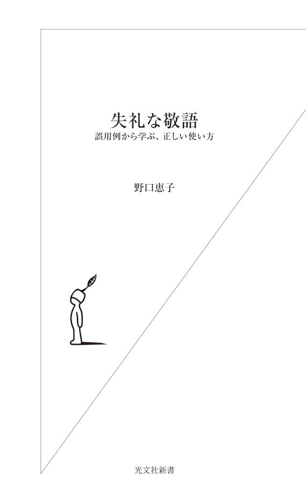

| 失礼な敬語～誤用例から学ぶ、正しい使い方～ | |
| 野口 恵子 | |
| (2013) | |

「よろしくお願いします」で明け、「よろしくお願いします」で暮れる
言葉は考えて使いたい
「よろしくお願いします」は、あらゆる場面で用いられる大変便利な挨拶の言葉だ。
形の上から言えば、「よく願う」の謙譲語が「よろしくお願いします」ということになる。日本語の「よろしくお願いします」は外国語に翻訳できない。ほぼ直訳した表現が韓国語には存在するが、自己紹介の際に使われる程度で、日本語のようにいつでもどこでも使えるものではない。
「よろしくお願いします」のバリエーションには、「今年もよろしくお願いします」を約めた「ことよろ」から、前半部分の「よろしく」だけのもの、後半部分の「お願いします」だけのもの、「どうぞよろしく」「一つよろしく」「後はよろしく」「そこんとこよろしく」など別の言葉を足したもの、もったいぶって長くした「何とぞよろしくお願いしたいと思う次第でございます」まである。「よろしくお願いをさせていただきたいというふうに思います」などという誤用もある。
会議では、開会を告げるとき、また、参加者に発言を促す度に「よろしくお願いします」が用いられる。会議の終了時にも、「ではこの線で進めていくということで、皆さん、よろしくお願いします」と言ったりする。
ラジオの番組などでも、ゲストを迎えた二、三十分ほどの間に何度も「よろしくお願いします」が発せられる。
「今日はよろしくお願いします」
「この件について、よろしくお願いします」
「また後ほどよろしくお願いします」
「このコーナーもよろしくお願いします」
「次のコーナーもよろしくお願いします」
「リスナーから質問が来ています。よろしくお願いします」
「今日はどうもありがとうございました。次回もよろしくお願いします」
私自身も仕事上のメールを送る際に、「よろしくお願いします」を頻繁に使用している。必要な事柄を伝達した後に、「以上です」の代わりに、「よろしくお願いします」と書く。両方書くこともある。
このように、日本語の「よろしくお願いします」は相手に何かを頼む際の謙虚な表現として重宝されてはいるが、一方で、場合によっては強引な物言いにもなることには注意したい。
「無理を承知でお願いしています。よろしくお願いします」
これは、相手を当惑させる「お願い」の仕方である。
「原料費の高騰により、値上げさせていただくことになりました。ご理解とご協力のほど、よろしくお願い申し上げます」
これも一方的な通告だ。「反論は受け付けない」という意思表示になる。
表面的な言葉の丁寧さに、言われたほうも「ああそうですか」と聞き入れてしまい、しばらくしてから、不信感や不快感がこみ上げてきたりする。「よろしくお願いします」を巧みに使う口当たりのよい人に乗せられたわけだ。「よろしくお願いします」の持つもう一つの面である。
「よろしくお願いします」に込められているのは、ものごとがうまくいくように適切な処置を施してほしい、という気持ちだ。少し古風な、「よしなにお取り計らいください」、時代劇の殿様風の、「よきに計らえ」なども似ている。
「よろしくお願いします」は、意味上も文法上も、謙虚な依頼の表現である。依頼の内容は比較的軽いもので、相手にとっては大きな負担になるものではない。だから頼まれたほうも、「よろしくお願いします」と、同じ言葉を返すことができる。依頼者に向かって、「お互い様です」と言っているわけだ。よく言えば、信頼関係、悪く言えば、共犯関係。つまるところ、依存し合い、助け合うことで双方が存続する、持ちつ持たれつの関係がここにある。
したがって、相手が同じ言葉を返すことができないと予めわかっているときに「よろしくお願いします」と言うのは傲慢になるのだ。厚かましい要求を突きつけておいて「よろしくお願いします」はない。これでは、言葉の意味を全く考慮していないことになる。
言葉の意味が考慮されていない例として、これも日常生活の中で（特にビジネスパーソンの間で）よく用いられている「お疲れ様です」がある。
私の場合、午前中は言うまでもなく、午後の早い時間にこの労いの言葉をかけられると、気持ちが萎え、疲労感に襲われる。仕事に勤しみ、疲れを感じていないときに「お疲れ様です」と言われると、どっと疲れるのだ。夕方以降ならありがたく受け止めるのだが、疲れていないときのこの一言には抵抗がある。必死にがんばっている人に向かって「がんばって」と言うのに似た、善意の暴力のようなものを感じる。
これと同様なのが、「お世話になっております」だ。言葉の意味を考えたら、このフレーズは全く初めての相手には使えない。自分は初めてだが会社同士の取引はあるとか、この相手とは初めてだが関係者との付き合いはあるとかいう場合は、全く初めての相手ではないからこの限りではない。
「初めてお電話いたします。私、Ａ商事のＢと申します。大阪支社の山田部長には一度お目にかかったことがあるのですが」
相手がこう言ってきた場合は、「お世話になっております」と応じる。しかし、「Ｂと申します」の後がなく、会社同士の取引もなければ、「お世話になっております」と言うことは本来ならできない。この場合なら、「はい、承ります」と言えばよい。
「いただきます」「ごちそうさまでした」「行ってまいります」「行ってらっしゃい」「ただいま」「お帰りなさい」「おやすみなさい」「お大事になさってください」「お暑うございます」などなど、挨拶の言葉にはそれぞれ意味がある。意味を無視する癖がつくと、心にもないことを平気で言うようになる。
言葉は考えて使いたい。短時間に、同一人物に向かって「よろしくお願いします」を連発するのも、あまり意味を考えていないことになる。便利だからと言って使いすぎると、言葉はすり切れる。支え合い、分かち合う、和の精神から生まれた「よろしくお願いします」が過剰使用や誤用によってその意味を失うのは、実にもったいないことである。
本書ではこれから、敬語の過剰使用という観点から、言葉とコミュニケーションの問題を考えていこうと思う。
私は大学の非常勤講師として、日本人の学生や外国人の日本語学習者に接している。敬語に関して言えば、「初心者マーク」をつけた若者たちだ。彼らには、まず、シンプルで正しい敬語を見つけてほしい。常にそのことを念頭に置いて、授業を行っている。
ところが、ちまたにはおかしな敬語が溢れている。純粋な若者たちは、周りの大人たちの言葉づかいを模倣する。これはまずい、そう思って、この本を書いた。
敬語の分類（動詞）
❚尊敬語
――相手、および話の中に登場する人への敬意を表す表現。「お／ご〜になる」「〜（ら）れる」敬語動詞（「召し上がる」「いらっしゃる」「おっしゃる」など）。
❚謙譲語Ⅰ
――自分自身や自分の側の人間を低めることによって、相手、および話の中に登場する人を高める表現。相手、および話の中に登場する人への働きかけのある場合に用いられる。「お／ご〜する」敬語動詞（「もらう」の謙譲語としての「いただく」、「申し上げる」「存じ上げる」「伺う」「拝見する」など）。
❚謙譲語Ⅱ別名丁重語
――自分自身や自分の側の人間、およびものごとを丁重に述べるときに使われる表現。「食べる」「飲む」の謙譲語としての「いただく」、「申す」「存じる」「まいる」「いたす」「おる」など。
❚丁寧語
――相手に対して丁寧な言い方をするときに用いる表現。「です」「ます」「ございます」など。
【参考】
名詞の美化語
――美しく、上品に言うときに用いる。「お茶」「お菓子」「お釣り」「お寺」「ご飯」など。
動詞の敬語の例（敬体）
動詞 尊敬語／謙譲語Ⅰ／謙譲語Ⅱ別名丁重語／丁寧語
会う お会いになります・会われます／お目にかかります・お会いします／―／会います
帰る お帰りになります・帰られます／―／―／帰ります
話す お話しになります・話されます／お話しします／―／話します
言う おっしゃいます・言われます／申し上げます／申します／言います
知る（知っている）ご存じです・ご存じでいらっしゃいます／存じ上げております／存じております／知っています
行く いらっしゃいます・おいでになります・行かれます／伺います（先方に「行く」）／まいります／行きます
くれる くださいます／―／―／くれます
もらう ※／いただきます／―／もらいます
食べる 召し上がります／―／いただきます／食べます
見る ごらんになります／拝見します／―／見ます
いる いらっしゃいます・おいでになります／―／おります／います
来る いらっしゃいます・おいでになります・来られます／―／まいります／来ます
する なさいます・されます／―／いたします／します
出席する ご出席になります・（ご）出席なさいます・出席されます／―／出席いたします／出席します
※目上の人がほかの誰かに何かを「もらう」というのは言いづらい。もらう側は与える側よりも下に位置するイメージがある。「ノーベル賞をおもらいになりました」は「ノーベル賞を受賞なさいました」などに言い換える。
いくら何でも、いただきすぎ
現代日本人に最も好まれている敬語
ラジオで、マナーの専門家が正月の過ごし方について話している。
「初詣はどのようにしたらいいんですか」
「まずは氏神様に行っていただいて、それからお寺さんに行っていただいて、まずは感謝をしていただいて、皆のことを思っていただいて、それからご自分のことをお願いしていただくということですね」
「お節料理を食べるときは？」
「祝い箸を使っていただいて食べていただいて」
先生、いくら何でもいただきすぎ。「～～してください」「～～するといい」「～～することが望ましい」「～～する決まりになっている」などの表現が使えるケースを、一律に「～～していただく」で結んでいる。
現代日本人に最も好まれている敬語が「いただく」である。しかしながら、正しく使われているとは言いがたい。
スーパーの食品売場からも、おかしな「いただく」が聞こえてきた。
「どうぞー。お味見もいただいておりますよー」
敬語部分を取り去ると、この表現の欠陥が明らかになる。この文言は、「味見ももらっている」と言っているのである。これは日本語として通用しない。「味見もしてもらっている」なら日本語として通用するが、「味見してみてください」と言いたいときにわざわざ「もらう」を使う必要があるのだろうか。
「味見もしてもらっている」を敬語にすると「お味見もしていただいております」になるが、これがこの場にふさわしい表現とは思えない。「どうぞー」とか「よー」とか語尾を伸ばしているのは、敬語を使いつつも親しみを込めて客に声をかけているということなのだろう。それなら、「お味見、どうぞー」でもよいのではないか。
この場面で使える敬語の表現は複数ある。たとえば次のような言い方だ。
「どうぞ召し上がってみてください」
「よろしかったらお試しください」
「ご試食、いかがですか」
「いただく」を使わなければならないということはないのだ。たとえ正しい使い方でも、「いただく」の過剰使用は聞き苦しい。ましてや、誤った「いただく」を多用することは、謙虚で奥ゆかしい言葉「いただく」に対して失礼ではないだろうか。
正しい初詣の仕方があるように、正しい敬語の使い方がある。「いただく」さえ使えば丁寧だ、上品だというのは間違いだ。敬語は適切に使って初めて、その効果を発揮する。
「いただく」は、「もらう」の謙譲語Ⅰ、および、「食べる」「飲む」の謙譲語Ⅱ別名丁重語である。謙譲語ⅠとⅡは区別され、「ご連絡する」「拝見する」「申し上げる」のように、目上の相手に働きかけるものが謙譲語Ⅰ、「まいる」「いたす」「おる」のような、相手への働きかけのない行為・状態を表すものが謙譲語Ⅱ別名丁重語である。
この章で問題にするのは、謙譲語Ⅰの「いただく」である。「（目上の人に何かを）していただく」と「（目上の人に何かを）いただく」について、さらに、「～～してもらう」と「～～してくれる」、「～～していただく」と「～～してくださる」の使い分けについて見ていきたい。
「～～していただきました」（～したのは、目上の人であるあなた）とはすなわち、「私はあなたに～～してもらった」であり、これが意味するのは、「あなたが～～した。私はうれしかった」「あなたが私のために～～した。私はあなたに感謝している」ということだ。
「～～してもらいたい」「～～してもらえないか」「～～してもらえるとありがたい」「～～してもらわないと困る」と言えば、人に何かを依頼したり、ときには命令したりできる。先のマナーの先生は、「（お節料理は）祝い箸を使ってもらって食べてもらって」と言っていたわけだ。「祝い箸を使って召し上がってください」と同じ意味である。「～～してもらう」が、アドバイスの表現として使われたことになる。
うれしくない場合に使われる「～～してもらう」もある。「勝手に持ってってもらっちゃ困るんだけど」は、相手への抗議の言葉である。「あなたが勝手に持っていったことで、私は迷惑を被った」「あなたに勝手に持っていかれて、私は困った」という意味であり、これは「～～してもらう」の受身的用法だ。
さらに、「～～してもらってもいいですか」を「～～してください」の意味で使う人が増えたせいで、前後関係を把握しておかないと、誤解が生じる恐れも出てきた。従来、「～～してもらってもいいですか」は、「第三者が～～することをあなたは許可するか」と言いたいときに使う表現であった。
「先生、さっきから患者さんが外で待っています。もう診察室の中に入ってもらってもいいですか」
看護師がこのように医師に尋ねる。この用法に加えて、このごろは相手の行為を促すのにも使われるため、紛らわしくなったのだ。「～～する」のが目の前の相手なのか、それとも別の人物なのか、という大きな問題である。
つまり、聞き手に対して「～～してほしい」と言いたいときに、「～～してもらっていいですか」と言うようになったのである。これは、依頼の表現「～～してください」の敬意の度合いが下がって、命令のようにも聞こえるということで、使いづらくなったためだろう。
「～～してください」に代わる言い方として、「～～してもらえますか／いただけますか」「～～してもらいたいのですが／いただきたいのですが」「～～してくださいますか」その他いろいろある。それにもかかわらず、皆、申し合わせたかのように、「～～してもらってもいいですか／いただいてもよろしいでしょうか」を使うようになった。不思議な現象だ。
いや、不思議でも何でもないのかもしれない。言葉はうつるものだし、意識的にほかの人の言葉づかいを真似ることもあるからだ。
「～～してもらう」と「～～していただく」の違いは敬語かどうかということだけだが、「～～してもらう」を使った文にはまず見られない文法上の誤りが、なぜか敬語の「～～していただく」のときには頻繁に表れるようになった。それは助詞の間違いである。
「先ほど先生がこのことをご説明いただいたんですけど」
このような言い方だ。もちろん、この文の場合、「先生が」ではなく、「先生に」が正しい。「さっき先生がこのことを説明してもらったんですけど」と言う人はいない。この文が成立するとしたら、それは、先生がほかの誰かから説明を受けた場合だ。
「先生がこのことを説明していただいた」と言う人に、「説明したのは誰か」と問えば、むろん「先生」と答えるだろう。「先生が（私に）説明してくれた」と「（私は）先生に説明してもらった」の「が」と「に」を混同する人はいないと思うが、「いただく」を使うと、どうもおかしくなる。
「先生が説明してくれた」の尊敬表現は、「先生が説明してくださった」「先生がご説明くださった」など。「先生に説明してもらった」の謙譲表現は、「先生に説明していただいた」「先生にご説明いただいた」など。このように、動詞が変わっても、助詞が変わることはない。
初級レベルの外国人日本語学習者や日本語母語話者の幼児においては、標準日本語の初歩的な授受表現としての「くれる」と「もらう」の区別がつかないという場合もある。「初歩的な」とわざわざ書いたのは、非難、否定的意味を持つ「くれる」と「もらう」ではないということだ。「にっくき親のかたき、どうしてくれようか」（『大辞林』より）や、「いったい何てことしてくれたんだ」の「くれる」、「あんたなんかに来てもらったら迷惑だ」や、先に書いた「勝手に持ってってもらっちゃ困るんだけど」の「もらう」ではない。
外国人学習者や幼い日本の子供を別にして、「くれる」と「もらう」の区別がつかない日本語話者はいないはずだが、敬語の「くださる」と「いただく」になると混同する人が出てくる。
「くださる」と「いただく」がほとんど同じように使われる場面もあるため、混同するのも無理からぬことではある。デパートやスーパーなどでよく聞かれるアナウンスがそれだ。
「本日は、ご来店くださいまして、まことにありがとうございます」
「本日は、ご来店いただきまして、まことにありがとうございます」
アナウンスでは、「誰が」や「誰に」が表に出ていない。つまり、助詞の「が」と「に」が使われていない。そのため、いざ助詞が必要になったときに、よくわからなくなる。助詞の誤用の元となったのが、このようなアナウンスであると言える。
「ご来店くださいまして」と「ご来店いただきまして」は、主語が異なる。「くださいまして」すなわち「くれる」を使うということは、「あなたが店に来てくれて」と言っているわけだ。「いただきまして」のほうは「もらう」だから、「私は、あなたに店に来てもらって」と言っている。前者の主語はあなた、後者は私である。
後半部分で来店客に礼を述べているわけだが、一般的に、「ありがとう」の前には「～～してくれる」が来る。友人の訪問に感謝するときは、「来てもらってありがとう」より、「来てくれてありがとう」のほうが自然だ。
「くれる」と「もらう」の違いについて、『明鏡国語辞典』は「もらう」の項で以下のように解説している。
「父が時計を買ってくれた／（私は）父に時計を買ってもらった」では、与えた人（＝父）を主語にとる「くれる」のほうが、与えた人の意志性や親切心がよりはっきりと出る。
その通りで、「友達がお弁当を買ってきてくれた」と「友達にお弁当を買ってきてもらった」とを比較しても同じことが言える。前者は、「友達が私の分まで弁当を買ってきた。私はうれしかった」。一方、「私」が主語の「もらう」は、「私が友達に頼んだ結果、友達が私のために弁当を買ってきた。私は友達に感謝している」ということだ。後ろに「ありがとう」をつけるなら、やはり「買ってきてくれてありがとう」だろう。「買ってきてもらってありがとう」は不自然だ。
店内放送を「くれる」と「もらう」を使った常体にした場合も、同じことが言える。「来店してくれて、ありがとう」と「来店してもらって、ありがとう」とでは、前者のほうが自然だ。
「くれる」と「いただく」のそれぞれの敬語を使った実際のアナウンスになると、その差はほとんど感じられない。主語の違い、視点の違い以上の差はなくなるようだ。「ご来店くださいまして、まことにありがとうございます」と「ご来店いただきまして、まことにありがとうございます」とでは、前者のほうが本来は自然な日本語であったのだろうが、現在では後者を不自然だと見なす人はいない。
それだけ、「いただく」が勢力を伸ばしているとも言える。『明鏡国語辞典』を真似て書くと、「もらった側（＝私たち）を主語にとる『いただく』のほうが、私たちの喜びや感謝の気持ちがよりはっきりと出る」と感じる人が多くなっているのだろう。
「ご来店くださいまして」と「ご来店いただきまして」は主語が異なるものの、その主語は姿を現していない。そして、同一の場面で用いられている。そのため、両者を同じものだと思ってしまう人がいるのは仕方のないことだ。
「先生がこのことをご説明くださいました」には主語が示されているが、「先生にこのことをご説明いただきました」の場合、主語の「私は」が表に出ることは少ない。そこで、助詞の混乱が生じ、「先生がこのことをご説明いただきました」と、つい言ってしまう。「先生がこのことを説明してもらいました」とは決して言わない人が、「もらう」を「いただく」に変えると、初級レベルの外国人学習者のような間違いを犯すのだ。
それでも、「先生」のすぐ後に「ご説明......」が来る場合は、「先生がご説明いただきました」とはならずに、「先生にご説明いただきました」と正しい言い方をする。間に何か入ると混乱が起きる。右の例では「このことを」しか入っていないが、もっと長い語句が挿入されると、間違いを犯す確率がぐんと高くなる。
「先生がこのことを大変わかりやすくご説明いただきました」
このような誤用である。「先生が」と始めたら、「くださいました」で締めるしかない。どんなに「いただく」が好きでも、ここはこらえなければならない。
「いただく」好きな現代日本人は、「～～していただく」だけでなく、「（名詞）をいただく」の形もよく使う。
「ご注文受付からお届けまでに、一週間ほどお時間をいただきます」
話者はそのつもりではないだろうが、この「いただく」は横柄だ。「一週間ほどお時間をいただきます」ではなく、「一週間ほどかかります」と言えばよい。業者が「時間をもらう」などと言わなくても、客はある程度の日数を要することぐらい承知している。それが三日なのか一週間なのか二週間なのか知りたいだけだ。こちらがあげていないものを「いただきます」と言われても困る。
話者は、謙譲語「いただく」を使って低姿勢な態度を示そうとしたのだろう。しかし、時間は「いただく」ものではなく、「かかる」ものである。どうしても「いただく」を使いたい場合は、「一週間ほどかかりますが、お待ちいただけますでしょうか」のような問いの形にする。
「一週間ほどお時間をいただきます」をシンプルな敬体に直すと、「一週間ぐらい時間をもらいます」となる。ごく普通の言い方の「一週間ぐらいかかります」よりこれのほうがよいとは思えない。ちなみに、「一週間ほどかかりますが、お待ちいただけますでしょうか」のシンプル敬体訳は、「一週間ぐらいかかりますけど、待ってもらえますか」である。
相手の名前を尋ねる際にも、おかしな「もらう」が使われている。シンプル敬体訳を先に記すと、それは「名前をもらってもいいですか」というものだ。元の文はこれだ。
「お名前様をちょうだいしてもよろしいでしょうか」
「あなたの名前」を「お名前様」と言っているが、これは過剰敬語というより、完全な誤用だ。「お名前」だけで、目の前の相手の名はもちろん、目上の第三者の名前のことにもなる。相手の名前から一字とって我が子につけたいとか、名前を継ぎたいとかいうのならともかく、「名前をもらってもいいですか」が「名前を教えてください」の意味になることはない。
「ご職業を教えていただけますか」「お年を伺ってもよろしいでしょうか」と言う代わりに、「ご職業様をちょうだいできますか」「お年様をちょうだいしてもよろしいでしょうか」などと言う人はいないだろう。そう考えると、「お名前様をちょうだいしてもよろしいでしょうか」が日本語としてありえない形であることに気づくはずだ。
「ちょうだいしてもよろしいでしょうか」「ちょうだいできますか」（それぞれのシンプル敬体は、「もらってもいいですか」「もらえますか」）を「教えてください」の代わりに使うことはできないのである。
へりくだって丁重に話すときに重宝される「いただく」であるが、用いる際には、元の「もらう」の意味を思い出して、適切に使っているかどうか注意を払ったほうがよいだろう。間違いを犯したり慇懃無礼になったりしては、謙虚な気持ちから使った「いただく」が、その機能を果たさないどころか、逆効果になってしまう。
取り扱い注意の「させていただく」
実は難しい謙譲の表現
謙譲の表現というと「させていただく」を思い浮かべる人は少なくないと思うが、これは使いこなすことが相当難しい表現である。どのように難しいかは後述するとして、もし、今、目の前に使い方のよくわからない機械があったら、私たちはどうするだろうか。一見簡単に動かせそうだが、実は高度な技術が要求されるという代物だ。
どうしてもそれを使いたい場合は、必死になって操作方法を覚えるだろう。その能力を身につけて初めて、機械をうまく扱えるようになる。使用者の技術が未熟だと、誤作動が生じ、事故が起きる。
「させていただく」は、「取り扱い注意」と大きく書かれた機械に似ている。ただし、機械と異なるのは、使い方を学習すればするほど、実際には使用しにくくなるという点だ。ある目的のためには有効に働くが、そのチャンスはあまり多くないから実際の出番は少ない、という複雑な機械が「させていただく」なのだ。
「させていただく」には、大きく分けて二つの用法がある。厄介なことに、その二つは相反する性質を持っている。
一つ目は、「厚かましくて申し訳ないと思いつつ、私は～～する。ありがたいことに、それをあなたが許可してくれたから」という気持ちで用いるものだ。まだ許可が下りていない行為について述べるときには、「させていただきたいのですが」「させていただけますか」という願望や問いかけの形になる。
もう一つは、相手の意向など全く考慮せずに、「私は～～する」と一方的に宣言するものである。控え目な態度で許可を求める一つ目の使い方の対極に位置し、言葉づかいは丁寧でも自分勝手なことをするわけだから、表現と行為とのギャップが大きい。
このように、「させていただく」は両刃の剣である。単なる「する」の謙譲語ではない。自分の行為を控え目に言うときはいつでも「させていただく」が使えると思っている人がいるが、それは勘違いだ。
そして、この勘違いは危険を伴う。なぜなら「させていただく」は、お腹の中で相手をバカにしながら表面上は下手に出るときなどにもよく使われるからだ。謙虚な表現だと思い込んで「させていただく」を多用すると、本人の意向と裏腹に、失礼な人という烙印を押されかねない。
まず、「させていただく」が、動詞「する」の使役形「させる」と、「～～てもらう」の謙譲語「～～ていただく」からなっていることに注目したい。動詞の使役形の使い方のうち、人に何かをすることを強いるとか仕向けるというのはよく知られている。「完璧に仕上がるまで何度もやり直させる」「飲めないと言っている人に無理に酒を飲ませるものではない」といった使い方だ。しかし、ここで問題にする使役の働きはそれではない。
そうではなくて、本人がしたがっていることをしてもよいと認める（否定形の場合は、認めない）というときに用いる使役形である。「娘を外国旅行に行かせる」「医者からダイエットを命じられた甘党の夫に、私は一か月に一度しか甘いものを食べさせないことにした」といった使い方だ。
「～～てもらう」は言うまでもなく、「消しゴムを貸してもらう」「英語を教えてもらう」「パンを買ってきてもらう」の「～～てもらう」である。私もしくは私の身内に消しゴムを貸す人、英語を教える人、パンを買ってくる人がいる。その人から受けた恩恵への感謝の込められた表現だ。その人物が自分にとって目上の存在であれば、「～～ていただく」となる。
したがって、「させていただく」を用いる際には、させる誰か、すなわち、人が何かをすることに許可を出す誰かと、することを許してもらう誰か（たいていは、私）がいなければならない。それがはっきりとしている次のような場面では、「させていただく」が真骨頂を発揮する。
上司 「ずいぶん顔色が悪いけど、どうかしたの」
部下 「今朝からひどい頭痛で。薬を飲んだんですけど、ひどくなるばかりなんです」
上司 「今日はもう帰ったほうがいいんじゃないの。家に帰って寝るとか、病院に行くとか」
部下 「そうですか。そうさせていただけると助かります。ありがとうございます」
（翌日）
部下 「昨日早退させていただいたおかげで、ゆっくり休むことができました。もうすっかりよくなりました。お心づかい、どうもありがとうございました」
これは、親切な上司が早退を勧めてくれた場合だが、もちろん、部下のほうから上司に早退の許可を求める際にも、「させていただく」を使うことができる。
「頭痛がひどいので、申し訳ありませんが、今日は早退させていただけますでしょうか」
これらは、意味から言うと許可と恩恵、文法的に見れば使役と謙譲という、まさに正統派の「させていただく」である。さらに、依頼を受けた場合に用いる「させていただく」もこの用法に含めることができる。自分がするのが当然だろうとは思っているが、遠慮もあってやり始めないでいたら、誰かが依頼という形でぽんと背中を押してくれた、といった状況で使用される。
たとえば、パーティーの席上で、参加者がスピーチをしているとする。自分もするべきだと思いながらも、どうも前に出て行く勇気がない。そんなときに主催者の一人が近寄ってきて、「まだスピーチなさってませんよね。ぜひお願いします」と耳打ちする。そのとき、「させていただく」を使うことができる。
「では、私も一言ご挨拶させていただきます」
話すことを勧めてくれた人への感謝の表現なのだから、会場にいるほかの人々に言う必要はない。「させていただく」は、許可や依頼への感謝を込めて用いるものである。これが、「させていただく」の一つ目の用法だ。
もう一つの「させていただく」は、相手に失礼であることを十分に承知しながらあえて用いる。意図的な慇懃無礼である。
会社で何か嫌なことがあって、それに耐え切れなくなった人が上司に言う。
「会社をやめさせていただきます」
意味は「こんな会社やめてやる！」と同じだが、そのような捨て台詞を吐くのではなく、わざわざ謙譲表現「させていただく」を使うのである。これは、低姿勢な言い方でありながら、決定事項を一方的に通告している。受け取る側は、表向きと実際の意味の矛盾に困惑し、不快感も抱く。それが話し手のねらいでもある。相手を不愉快にさせるために用いているのだ。
「させていただく」はもちろん敬語なのだが、敬語は相手を苛立たせもし、怖がらせもする。店員のミスに腹を立てた客が、「責任者呼んでこい」と怒鳴るのと、落ち着いた低い声で、「支配人にお目にかかりたいのですが」と言うのとでは、後者のほうが店員を震え上がらせる。敬語とはそういうものでもある。
「やめさせていただきます」と相手の了解を得ることなく申し渡すのは、「させていただく」の本来の姿ではないのだ。次の例も同様だ。
「今まで黙って拝聴しておりましたが、ご意見に賛同いたしかねますので、私も一言言わせていただきます」
「その件につきましては、これまでに何度も申し上げました通り、お断りさせていただきます」
言葉は丁寧でも言っていることはきつく、相当強い自己主張になっている。
自らやめる意思を表明するにしても、「やめさせていただけますか」と疑問形にすると、一つ目の用法の「させていただく」になる。それは次のような場合だ。
会の役員を引き受けたけれども、家庭の事情で続けられなくなった。ほかの役員や会員に迷惑をかけることになるからすまない気持ちでいっぱいだが、どうすることもできない。やめることを許してほしい......。そういった気持ちで用いる「やめさせていただきたいのですが」や「やめさせていただけますか」は、一つ目の用法、いわば正統派「させていただく」である。
二つ目の用法、すなわち、失礼な相手に対して、それを上回る「失礼のお返し」をしようとわざと必要以上の敬語を用いるのが、戦略として行う慇懃無礼である。
「させていただく」を使う必要がない、または使わないほうがよいケースも挙げておこう。寄付金を募っている団体に宛てたメッセージに、次のようなものがあった。
「少額ですが、送金させていただきました」
団体の活動に賛同してお金を送った人が書いたものだ。「送金した」の丁寧語は「送金しました」。丁重に言いたい場合は「送金いたしました」。自分の行為を謙遜して述べようとしたのだろうが、ここに「させていただく」は必要ない。相手から「お願いします」と依頼されたことを自分が実行したのである。送金を許可してもらったわけではない。
「頼まれたからお金を送ったのではない。自分の意思で、送りたいと思ったのだ。送ってやったぞというエラソーな言い方に聞こえるのを避けるために、『させていただく』を使って低姿勢に述べたのだ」と本人は言うかもしれない。しかし、相手を立てる低姿勢な言い方が、「送金いたしました」なのである。「する」の謙譲語Ⅱ別名丁重語「いたす」は、そのために存在する。
一方、使うと滑稽に聞こえる「させていただく」もある。それはたとえば新入社員の自己紹介だ。
「この春、Ａ大学を卒業させていただきました」
本人は「卒業した」を謙虚に述べたつもりだろうが、これでは、単位が足りなくて卒業は無理だと言われたけれど教授に泣きついたらお情けで単位をくれた、と解釈されても文句は言えない。卒業させてくれた誰かがいること、そして、自分がその人に感謝していることが、「させていただく」によって示されているのである。
この場合も、「送金いたしました」と同様に「いたす」を使って「卒業いたしました」と言えば、その場にいる人々を立てた謙虚な表現となる。自分が卒業したということを表すのに、これ以上丁寧な言い方はない。
また、若い女性タレントが自身のブログに、ファンへのメッセージとしてこんな表現を用いていたのを見かけたことがある。
「皆さんにご報告があります。私、このたび、入籍させていただくこととなりました。驚かせてしまってごめんなさい」
「入籍する」というのは、「結婚する」「婚姻届を提出する」と必ずしも同じ意味ではないのだが、この議論は別の機会に譲るとして、ここで問題なのはやはり「させていただく」である。
自分の行為を控え目に述べる際には「させていただく」を使う、と思っているのだろうが、突然の発表を読者に詫びているところを見ると、ファンの意思とは関係のないできごとのようだ。この件に関して、ファンからの許可も依頼も恩恵も受けていない。その場合、「させていただく」は使えない。「結婚することになりました」「入籍することとなりました」でよい。
「いたす」を用いて、「結婚いたします」「入籍いたします」と書いてもよい。若いタレントからファンへのメッセージなら、わざわざ改まった言い方をしなくても、丁寧語で、「私、結婚します」と書けばよいのではないか。そのほうが若者らしく、ファンとの距離も近く感じられる。
ほかにも、「お二人と知り合わせていただいたのは三年前のことで」とか、企業に抗議の電話をかけたことを報告するのに、「Ａ社に電話させていただきました」と述べる人がいる。どちらも、「させていただく」は不要である。謙譲語なしの、「お二人と知り合ったのは三年前のことで」「Ａ社に電話しました」でかまわない。
もし、「お二人」に対する尊敬の念を表したいのなら、「会う」の謙譲語の「お目にかかる」を用いて、「お二人に初めてお目にかかったのは」と言えばよい。「知り合う」には謙譲語がない。謙譲語として使用することがないからだ。「知り合う」とは、互いに相手を知ることであり、したがって対等の関係で用いられる。目上の人を、こちらが一方的に知る（存じ上げる）ことはある。目上の人に会う（お目にかかる）こともある。しかし、日本語の敬語では、目上の人と「知り合う」ことはないのだ。
また、「Ａ社に電話させていただきました」と言うと、Ａ社を敬っていることになる。抗議の電話をかけた話をしているのだから、話し手が立てたいのはＡ社ではなく、目の前の聞き手である。その場合、「Ａ社に電話いたしました」と言う。
大学生が出席カードに、「先週は風邪を引いたため、欠席させていただきました」と書いてくることもある。これも、「欠席いたしました」でよい。事情によっては、「欠席せざるを得ませんでした」「欠席を余儀なくされました」「欠席するしかありませんでした」という書き方もあろうが、欠席した事実を伝えるだけなら、表現にそこまで凝ることもない。
しかも、「先週は欠席させていただきました」と書いた学生から、前の週に欠席の連絡があったわけではない。「休んでもいいですか」と聞かれてもいない。そもそも、受講者の多い大教室での講義では、予め欠席の連絡をする必要もない。授業で発表することにでもなっていれば別だが、そうでなければ、事後報告でかまわない。もっとも私の担当する授業では、事後報告も特に要らない。
したがって、休んだ翌週の出席カードに前の週のことを書かなくてもよいのだが、一言書いておこうと思った学生は礼儀正しいのだと思う。だが、「させていただく」を使ってはいけない。許可なく休んだときには、「させていただく」ではなく、丁重語「いたす」を使うのである。
自分で決めたことを低姿勢に述べるつもりで「させていただく」を連発するのも考えものである。筑波大学教授の高橋祥友さんが、「耳障りな言葉」として書いている（二〇一二年六月三十日東京新聞）。
「各章は原稿用紙三十枚以内とさせていただきます」
「締め切りは十月末とさせていただきます」
「著者校正は二回とさせていただきます」
「本の完成は翌年三月とさせていただきます」
共著者が集まった企画会議における、出版社の人の言葉だそうだ。高橋さんは、「ここにいる私たちは皆執筆に承諾しているのだから、すべてに『いただく』を付ける必要はありません。『してください』で十分ですよ」と言ったそうだ。
「～～です」のへりくだった形が「～～とさせていただきます」だと勘違いしている人は少なくないが、自分が決めたことを相手に伝達するとき、または相手の了承を得たいと願うときに「させていただく」を使うと、前述した二つ目の用法に聞こえる恐れがある。話者の意思に反して、慇懃無礼になってしまうのである。
「させていただく」を一度も使わなくても、言いたいことを伝えることができる。相手への敬意は全く失われない。むしろ、「させていただく」よりはるかに謙虚な言い方になる。それはたとえば次のようなものだ。
「各章は原稿用紙三十枚以内でご執筆ください」
「締め切りは十月末です」または、伺いを立てる形にして、「十月末までに原稿をお送りいただけますか」
「校正は二回までにしてくださるようお願いいたします」
「完成は来年三月を予定しております」
ところで、私自身は「させていただく」を季節の変わり目に一度使用する程度に抑えようと心がけている。そのつもりがなくても結果的に慇懃無礼になるのを避けたいのと、語彙の豊富な日本語には同じような場面で使える表現がいろいろあるからだ。
「させていただく」の使用に自己規制をかけることは、言い回しを工夫するよい訓練になる。とはいうものの、年に四回の使用というわけにもいかず、月に四回ぐらいはつい使ってしまい、反省している。
「れ足す」「さ入れ」「を入れ」
余計な一文字を挿入する
「後で後悔する」「食事を食べる」「被害を被る」「犯罪を犯す」「違和感を感じる」といった表現は、同じ漢字が二度使われていることからもわかるが、意味の重複がある。これら重言（じゅうごん・じゅうげん）は避けたほうがよいとはいえ、話し言葉ではさほど気にせずに、または気づかずに、使ってしまうものでもある。
右の五つの表現のうち、「違和感を感じる」を除き、同一の漢字でも読み方が異なる。そのため、耳で聞いたり口に出したりする際に、同じ意味のことを繰り返しているという意識が薄れる。文字にするときには、少し意識して、「後悔する」「食事をとる」「被害に遭う」「罪を犯す」「違和感がある」のように書く人が多いのではないだろうか。
同じ漢字や同じ単語が繰り返されなくても重複表現になることはある。たとえ重言であっても、もはや誤用とは見なされないものもある。また、誤用ではあるが許容されているもの、明らかに誤用で使用を避けるべきものなど、さまざまだ。
「新しいニュース」という言い方は、語源を考えれば重言になるが、「知らせ・事件・報道」を意味する日本語の「ニュース」に、「新しい」という意味は含まれない。だから「そのニュースはもう古い」などと言えるのである。
「元旦の朝」というのも、「元旦」がすなわち「元日の朝」なのだから重言だが、許容されているようだ。それに対して、「元旦の夜」のように、単なる意味の重なりを通り越して矛盾が生じると、誤用と見なされる。
「見事グランプリ大賞に輝きました」
「新年明けましておめでとうございます」
「炎天下の中で試合をして体力を消耗した」
これらの重言を「元旦の朝」の部類と見なして許容するか、それとも「元旦の夜」と同じで避けるべき表現であると考えるかは、意見が分かれるところであろう。
「グランプリ大賞」の場合、フランス語の「グランプリ」イコール「大賞」である。「新年明けまして」は、年が明けて初めて新年が訪れるのだから、意味の矛盾がある。「炎天下の中」は、「炎天下」すなわち「燃えるように熱い太陽のもと」であるため、「中」は不要。重複を避けると、以下のようになる。
「見事大賞に輝きました」または「見事グランプリに輝きました」
「明けましておめでとうございます」または「新年おめでとうございます」
「炎天下で試合をして体力を消耗した」
意味の重なりに気づかずに同じような言葉を加えてしまうのと同様に、文法上必要のないものをつい足してしまうこともある。それが、「れ足す」「さ入れ」「を入れ」といった誤用だ。
一段活用動詞の可能形「食べられる」「見られる」を「食べれる」「見れる」のように言う「ら抜き」言葉はよく知られているが、余計なものを加えることも行われている。ちょっとした勘違いから始まったものと思われるが、その後、「インフルエンザ」（「影響」および「流行性感冒」の意のイタリア語）が猛威を振るうことになる。
「ら抜き」は現代標準日本語の文法では誤用だが、今や、標準語を話す人々においても広く使われている。若年層に限って言えば、誤用だとも思っていないだろう。また、地域によっては、「ら抜き」のほうが一般的な言い方、という所もある。
「れ足す」というのは、五段活用動詞の可能の言い方に「れ」が加えられるものである。「言える」を「言えれる」、「行ける」を「行けれる」、「話せる」を「話せれる」のように言う。「ら抜き」と同様、標準語では間違いだが、方言としては存在する。
「れ足す」を使う人は、一段動詞の可能の形がすべて「れる」（厳密に言うと、「られる」）で終わること、五段動詞にも「帰れる」「走れる」「座れる」など、「れる」で終わるものがあることから、可能形の語末は「れる」、と思ってしまったのだろう。
勘違いはよくあることで、五段動詞の「喋る」や「蹴る」を一段動詞だと思い（終止形だけ見れば、一段動詞の「食べる」「出る」と同じ形）、「ら抜き」になってはいけないとばかり、可能形にわざわざ「ら」を入れる人もいる。「喋れる」「蹴れる」が正しい言い方であるにもかかわらず、「喋られる」「蹴られる」と言うのだ。
「れ足す」は先に述べたように、五段動詞に見られる現象だったのだが、このごろは一段動詞においても行われるようになった。「ら抜き」にした上で「れ」を加えるのである。「寝られる」が「寝れる」となり、さらに「寝れれる」になるという、手の込んだ誤用である。
「いただく」が現代日本人に最も好まれている敬語であることはすでに述べた。敬語でコミュニケーションをとる際に、「～～していただく」「～～をいただく」「～～させていただく」などを使わずにすますことのできる人はまずいない。使わずにすますどころか、ほかの言い方がいろいろある場合でも、「いただく」が用いられる。この過剰使用が、ある誤用を生んだ。
多用の弊害として、混同が生じる。第一章で書いたように、「～～していただく」と「～～してくださる」が混同され、助詞の間違いが登場した。「先生に教えていただく」と「先生が教えてくださる」が混じった結果、「先生が教えていただく」と言ってしまう。これと似たような現象が、ほかの表現でも起きている。
一つは「さ入れ」、もう一つは「を入れ」である。動詞を「させていただく」の形で使用するとき、動詞の種類により、「～～させていただく」となるか「～～せていただく」となるか分かれる。「さ入れ」は、「～～せていただく」と言えばよい動詞にまで「さ」を入れてしまうものだ。「を入れ」は、「動詞＋いただく」を使うときに、入るはずのない「を」（「名詞＋をいただく」の「を」）を入れるというものである。
「やらさせていただきます」
「がんばらさせていただきます」
「歌わさせていただきます」
これらが「さ入れ」である。一方、「を入れ」は次のような言い方だ。
「お越しをいただきました」
「お招きをいただきました」
「ごらんをいただきたいと思います」
「さ入れ」と「を入れ」はまた、「いただく」を使わない表現の中にも表れる。誤用が誤用を生んだと言えよう。
「ちょっと座らさせてください」
「私は言いたくなかったのに、無理矢理言わさせられたんです」
「お待たせをいたしました」
「円高を是正をしていきます」
「よろしくお願いをいたします」
「座らさせて」「言わさせられた」の「さ」、「お待たせを」「是正を」「お願いを」の「を」は、足してはいけないものである。
「さ入れ」から見ていこう。「さ入れ」が表れやすいのは、「やらせていただきます」「座らせてください」「言わせられた」のような、動詞の使役形が使われている表現だ。この三つは、順に、「使役＋いただく」「使役＋ください」「使役＋受身」という形をとっている。したがって「さ入れ」の予防には、正しい使役形を知ることが必要になる。
まず、動詞を活用の種類で分けてみよう（事項参照）。外国人学習者を対象とした日本語教育では、三つに分類している。一つ目が五段活用動詞、二つ目が一段活用動詞、そして、三つ目が特別の活用をする「する」と「来る」。この三つ目を、日本の学校の国語文法では、サ行変格活用（サ変）動詞、カ行変格活用（カ変）動詞と呼んでいる。
五段動詞と一段動詞を区別するには、「～～ない」の形を作るとよい。五段動詞の場合、「行く／行かない」「話す／話さない」「待つ／待たない」「飲む／飲まない」「帰る／帰らない」のように、「ない」の前にはア段の音が来る。「行く」の「く」はカ行だから、そのア段、すなわち「か」である。
「会う」「言う」「歌う」など「う」で終わるものは、「あ」ではなく「わ」となる。歌を歌うように言われた幼児が、嫌がって、「やだー。歌なんか、歌あないもん」などと言うことがある。「わ」より「あ」のほうが発音が楽だからということもあるが、「歌う」の「う」をア行の「う」と解釈し、子供なりに正しく活用して「歌あない」と言っている可能性もある。「歌ふ／歌はず」を「歌う／歌わない」に変えたのは彼らではないのだから仕方がない。それにしても、「うたってみろ」より「うとうてみよ」のほうがはるかに柔らかい響きだ。現代標準日本語の音は、どうも荒っぽい。
五段動詞と一段動詞の見分け方に戻ろう。一段動詞はすべて「る」で終わるが、「ない」の形を作るには、その「る」を取って、「ない」をつける。「見る／見ない」「起きる／起きない」「食べる／食べない」「出る／出ない」などである。
五段活用動詞にも「る」で終わるものがある。「帰る」と「変える」は平仮名で書くと全く同じだ（アクセントは異なる）が、「帰る」が五段、「変える」が一段である。同様に、「切る」は五段で、「着る」は一段。
「喋る」と「蹴る」はともに五段動詞だ。この二つを一段動詞だと勘違いして、命令形の「喋れ」「蹴れ」を、「食べろ」「出ろ」に倣って、「喋ろ」「蹴ろ」と言ってしまうのは間違いである。
動詞の使役形に「さ」が入るのは、一段動詞と「する」「来る」であり、五段動詞には入らない。つまり、一段動詞と「来る」は、「ない」の形を作って、その「ない」を「させる」に変えれば使役形となる。「する」の使役は「させる」。五段動詞は、「ない」を「せる」に変えればよい。
これさえわかれば、五段動詞の「やる」「座る」「言う」を使った、「やらさせていただきます」「座らさせてください」「言わさせられた」が間違いであることがはっきりする。「さ」は要らないのである。
ところで、使役受身形の「言わせられる」は、「言う」の使役「言わせる」と、受身の助動詞「られる」からできているが、もう一つの使役受身形として、「言わされる」も用いられている。これはどちらも正しい。外国人学習者向けの日本語の教科書では、現在、「言わされる」のほうが多く採用されている。
動詞の分類と活用の基本
（五段活用動詞、一段活用動詞、特別な活用をする動詞）
・五段活用動詞
――ウクグスツヌブムルで終わる動詞。五十音図の五段（アイウエオ）にわたって活用する。
［基本形／～ない／～ます／～ば／命令／意向／可能／受身／使役／使役受身］
言う／言わない／言います／言えば／言え／言おう／言える／言われる／言わせる／言わされる・言わせられる
行く／行かない／行きます／行けば／行け／行こう／行ける・行かれる／行かれる／行かせる／行かされる・行かせられる
話す／話さない／話します／話せば／話せ／話そう／話せる／話される／話させる／話させられる
立つ／立たない／立ちます／立てば／立て／立とう／立てる／立たれる／立たせる／立たされる・立たせられる
呼ぶ／呼ばない／呼びます／呼べば／呼べ／呼ぼう／呼べる／呼ばれる／呼ばせる／呼ばされる・呼ばせられる
飲む／飲まない／飲みます／飲めば／飲め／飲もう／飲める／飲まれる／飲ませる／飲まされる・飲ませられる
切る／切らない／切ります／切れば／切れ／切ろう／切れる／切られる／切らせる／切らされる・切らせられる
帰る／帰らない／帰ります／帰れば／帰れ／帰ろう／帰れる／帰られる／帰らせる／帰らされる・帰らせられる
喋る／喋らない／喋ります／喋れば／喋れ／喋ろう／喋れる／喋られる／喋らせる／喋らされる・喋らせられる
蹴る／蹴らない／蹴ります／蹴れば／蹴れ／蹴ろう／蹴れる／蹴られる／蹴らせる／蹴らされる・蹴らせられる
・一段活用動詞
――ルで終わる動詞。五十音図のイ段またはエ段までが語幹。可能と受身は同じ形。
［基本形／～ない／～ます／～ば／命令／意向／可能／受身／使役／使役受身］
見る／見ない／見ます／見れば／見ろ／見よう／見られる／見られる／見させる／見させられる
いる（居る）／いない／います／いれば／いろ／いよう／いられる／いられる／いさせる／いさせられる
着る／着ない／着ます／着れば／着ろ／着よう／着られる／着られる／着させる／着させられる
食べる／食べない／食べます／食べれば／食べろ／食べよう／食べられる／食べられる／食べさせる／食べさせられる
変える／変えない／変えます／変えれば／変えろ／変えよう／変えられる／変えられる／変えさせる／変えさせられる
・特別な活用をする動詞
――「する」（サ行変格活用動詞）と「来る」（カ行変格活用動詞）
［基本形／～ない／～ます／～ば／命令／意向／可能／受身／使役／使役受身］
する／しない／します／すれば／しろ／しよう／できる／される／させる／させられる
獲得する／獲得しない／獲得します／獲得すれば／獲得しろ／獲得しよう／獲得できる／獲得される／獲得させる／獲得させられる
ゲットする／ゲットしない／ゲットします／ゲットすれば／ゲットしろ／ゲットしよう／ゲットできる／ゲットされる／ゲットさせる／ゲットさせられる
来る／来ない／来ます／来れば／来い／来よう／来られる／来られる／来させる／来させられる
次に、「を入れ」である。
「お越しをいただきました」
「お招きをいただきました」
先に触れたように、こうした「を入れ」を頻繁に耳にする。会話では、「パン買ってくる」「この映画見た？」などと、助詞の「を」省略することがよくある。親しい人とのくだけた会話に限らず、「この映画ごらんになりました？」のように、軽い敬語を使って話すときにも省くことは可能だ。
しかし、改まった場できちんとした言葉づかいで話すことが求められているときには、「この映画をごらんになりましたか」となる。助詞の省略をはじめ、略語を使うことなども極力避けるのがマナーである。
すると今度は、丁寧に話すときには「を」を入れる、改まった場面では「を」が必要、「を」があるのが正式、と思い込んでしまう。そのあげくが「を入れ」である。地位も名誉も学歴もあると思われる人々が、一様にこの間違いを犯している。日本語の文法を知らないのか、深く考えずに「右へ倣え」をしているだけなのかよくわからないが、この間違いが実に多い。
「お越しをいただきました」は、もちろん「お越しいただきました」でなければならない。シンプルな敬体は「来てもらいました」である。それが「来ていただきました」となり、さらに敬意の度合いを高くすると、「お越しいただきました」になる。「おいでいただきました」「いらしていただきました」なども同じだ。「来る」の尊敬語と、「もらう」の謙譲語で構成されている。
この「もらう」は、「プレゼントをもらいました」の「もらう」ではないから、「を」は入らない。「～～してもらう」「～～していただく」には「を」を入れたくても入れられないからよいのだが、「お／ご～～いただく」の形になると、「いただく」の前に入れたくなってしまうらしい。しかし、入れてはいけないのである。
「を入れ」の原因の一つは、先に書いた、きちんとした話し方をするときには「を」を入れる、という思い込みである。もう一つが、「お電話をいただく」「ご連絡をいただく」のような、「（お／ご）名詞＋をいただく」という形との混同である。動詞の「電話する」「連絡する」の場合は「お電話いただく」「ご連絡いただく」となる。
確かに紛らわしいのだが、名詞と動詞は別のものである。「（お／ご）名詞＋をいただく」が可能なのは、サ変動詞「名詞＋する」であると同時に、「名詞＋をする」という言い方が可能で、かつ、「名詞＋をもらう」と言えるものである。「電話する／電話をする／電話をもらう」「連絡する／連絡をする／連絡をもらう」「返事する／返事をする／返事をもらう」などがそれに当たる。
「もらう」を「いただく」にすると、動詞のほうは「お電話いただく」、名詞のほうは「お電話をいただく」となる。前者は「電話してもらう」、後者は「電話をもらう」の謙譲語である。「ご連絡いただく」と「ご連絡をいただく」、「ご返事いただく」と「ご返事をいただく」も同様である。
これらはたまたま、「を」があってもなくてもほぼ同じ意味で使える言葉だが、本を正せば、「動詞＋てもらう」と「名詞＋をもらう」という大きな違いがある。
現在、「を入れ」すなわち誤った「お／ご～～をいただく」が非常に多く使われているが、今述べたように正しい「お／ご～～をいただく」もあるため、区別がつきにくいようだ。私のところに来るメールにも、「を入れ」が散見される。
「ご執筆をいただき、まことにありがとうございました」
「お話をいただければ幸いです」
「執筆」の場合は、「執筆する」も「執筆をする」も言える。しかし、「執筆をもらう」とは言えない。したがって、「ご執筆いただく」（「執筆してもらう」の謙譲語）にしかならない。「話」のほうは、「する」をつけてもサ変動詞にならない。サ変動詞にならなくても困らないのは、動詞「話す」が存在するからである。したがって、「話してもらえれば」を敬語で言うときに「を」の入る余地はない。「お話しいただければ」が正しい。
念のために書いておくと、「映画出演のお話をいただいたのですが」の「お話をいただく」は、また別である。「話してもらう」の意味ではない。しかし、「話をもらう」がおかしな日本語であることを考えると、「お話をいただく」も不自然だということになる。「映画出演の話が来た」「映画の出演交渉があった」「映画に出演してほしいと言われた」と言いたいときに、わざわざ「いただく」を使う必要はない。
少し耳をすますと、「いただく」の前の「を入れ」は、至る所から聞こえてくる。
「皆様方にご議論をいただいて」
「ゲストの方にご出演をいただき」
「本日ご講演をいただきます先生は」
「ぜひお寄りをいただいて、ごらんをいただきたいと思います」
「ご理解をいただきたく存じます」
誤用例が多すぎて書き切れないほどだ。これらはすべて、「を」を取り去れば正しい日本語になる。政治家、アナウンサー、講演会の司会者、展示会の主催者、その他、数多くの人々がこの間違いを犯している。
若い人はあまり多くない。改まった場で、敬意の度合いの高い敬語を使わなければならない機会が少ないせいもあろう。若者たちは、「皆様方にご議論をいただいて」などと言わずに、シンプルで正しい日本語を用いて、「皆さんに議論してもらって」と言うだろう。「議論していただいて」にすれば、立派な敬語になる。より丁重な「ご議論いただいて」でなくてもいいのだ。「ご議論をいただいて」はもってのほかである。
ラジオから、「お客様にお越しをいただきました」というのが聞こえてきたとき、私は一瞬、アナウンサーが「オコシ」のアクセントを間違えたのかと思った。アナウンサーは平板型で発音したが、「オコシ」は中高型、すなわち、「コ」が高くあとは低くなければいけないと私は思ったのだ。私が頭に描いたのは、浅草名物の「雷おこし」を持ってスタジオに現れたゲストの姿であった。
不要な「を」が最も頻繁に表れるのは、これまで書いてきたように「いただく」の前だが、これがほかの表現にも及んで、誤用が拡散している。それが前述した、
「お待たせをいたしました」
「円高を是正をしていきます」
「よろしくお願いをいたします」
のような言い方だ。「待たせた」の謙譲語Ⅰは「お待たせした」、丁寧語は「お待たせしました」、それに謙譲語Ⅱの「いたす」をつけてさらに丁重にしたものが「お待たせいたしました」である。「を」の入る余地はどこにもない。
もし、「待たせ」という名詞が存在し、「名詞＋をする」で「待たせをする」と言えるのであれば、「お待たせをいたしました」も可能となるが、そういう言い方はない。「お届けをいたします」「お送りをいたします」なども耳にするが、これらも同じ間違いだ。
「よろしくお願いします」「どうぞよろしくお願いいたします」「何とぞよろしくお願い申し上げます」などは、動詞「願う」の謙譲語を用いた挨拶の言葉であり、途中に「を」は入らない。「を」を入れた「お願いをする」というのは、「神様にどんなお願いをしたの？」などと尋ねるときには使われるが、挨拶としては使われない。「よろしくお願いをいたします」では変なのだ。
また、「いたす」は「する」の謙譲語Ⅱ別名丁重語だが、「を入れ」は「いたす」と「する」の両方で見られる。その点が「いただく」「もらう」のペアと異なる。「話していただく」「お話しいただく」と言うべきところを「お話をいただく」と言ってしまう人でも、「話してもらう」を「話をもらう」とは言わないのだ。
この「を入れ」は、「名詞＋する」のサ変動詞と、「名詞＋をする」との混同から始まった。「いただく」のところで書いたように、「ご連絡いただきました」と「ご連絡をいただきました」は同じように使うことができる。常体で書けば、「連絡してもらった」と「連絡をもらった」である。
「いたす」を使った「ご連絡いたします」と「ご連絡をいたします」も同じように使える。常体は、「連絡する」と「連絡をする」。前者はサ変動詞、後者は「名詞＋をする」の形だ。サ変動詞に「を」は入らない。意味は同じでも、文法的には全く別のものである。この二つの混同に、「を」が入ったほうが丁寧だという思い込みがプラスされて、サ変動詞に「を」が加えられるようになった。サ変に異変が起きたのだ。
「政策を実現をしていくということは」
これらは、「する」の前には「を」が入るという思い込みから生まれた間違いだが、政治家の多くがこのような話し方をする。
「我が党をどうか応援をしてください」
「法案を提出をしました」
「この施設を制度化をすることができました」
「あらゆる資源を総動員をします」
「未曽有の事故を経験をして」
「政治は恵まれない人のためにあるということを改めて痛感をしました」
「歳出を徹底的に削減をします」
二〇一二年十二月の衆議院議員総選挙の際の、各党党首の言葉である。右も左も関係ない。国民のために必死になって働いている人も、あまりそのように見えない人も、そろって「を入れ」だ。これはもはや永田町の業界用語になっている。政治家たちのあまりの素直さ（他人の使う言葉につられてしまう、という意味で）には、驚くばかりだ。
初級レベルの外国人日本語学習者は、「～～を～～をする」というミスを犯すことがある。「部屋を掃除する」と「部屋の掃除をする」は正しいが、「部屋を掃除をする」はダメ、と習うのだが、間違えてしまうのだ。
「スポーツ大会を開催をする」
「映画を鑑賞をする」
「友達を家に招待をする」
このように言う学習者に、教員は、「する」の前の「を」を取るように言う。しかし、テレビやラジオからは連日、これらの表現が聞こえてくるのだ。このごろは、サ変動詞を受身で使うときにも「を」を入れる人がいる。
「スポーツ大会が開催をされる」
これももちろん間違いだ。
地位も高く、メディアへの露出度も高い人々がこれをやると、本当に日本語が乱れる。敬語の多少の間違いはご愛嬌だが、これは日本語文法の基礎の基礎である。サ変動詞の「を入れ」だけは、即刻やめてもらいたい。
ゴトリ、シテトリ、オトリ、テトリ
拡散する「簡易敬語」
「拡散ください」
「再送ください」
「アップくださいました」
「詳細をメールください」
「ＲＴいただけると幸いです」
「フォローいただいているのに、なぜかＤＭできません」
「ダウンロードいただき、ありがとうございました」
これらはツイッターの普及とともに登場した、〝簡易敬語〟とでも呼べるものだ。日本語の敬語のルールに則ると明らかに誤用だが、限られた参加者の符丁と見なせばいいかと、初めのうちは軽く考えていた。
ところが、この表現が改まった書状にまで頻繁に表れるようになった。仲間内の特殊表現なら、日本語として正しくなくても一向にかまわないのだが、正式な文書にまで表れてくると、事は一気に深刻さを増す。誤用であることがわからないというのは、由々しき事態なのだ。
右の例は、使われている言葉からも想像がつくように、ツイッター、メールなどのインターネット利用者が書いた（打った）ものである。「アップ」は「アップロード」の短縮語。「ＲＴ」は「リツイート」のこと。
これらの〝簡易敬語〟は、「拡散する」「再送する」「アップする」「メールする」「ＲＴする」「フォローする」「ダウンロードする」という「名詞＋する」のサ変動詞を、尊敬語の「くださる」、謙譲語の「いただく」とともに用いたものだ。
〝簡易敬語〟と書いたのは、「くださる」「いただく」の前に「して」がなければならないにもかかわらず、省略されているからである。この誤用、好意的に言えば、インターネット用語としての新手の敬語を、ひとまず、シテトリ（「して」取り）と名付けておく。文法的に正しい日本語は、以下の通りである。
「拡散してください」
「再送してください」
「アップしてくださいました」
「詳細をメールしてください」
「ＲＴしていただけると幸いです」
「フォローしていただいているのに、なぜかＤＭ（を送ることが）できません」
「ダウンロードしていただき、ありがとうございました」
元の文の、「詳細をメールください」に関して一言。「メールください」だけなら、「メールをください」という文から助詞の「を」が省略されたもの（会話ではよく行われる）とも考えられる。しかし、前に「詳細を」がある。その場合、次に来るのは「メールする」というサ変動詞以外にありえない。したがって、「詳細をメールしてください」としなければならない。「詳細をメールで知らせてください」「詳細な内容のメールを送ってください」などももちろん可能だが、字数制限のあるツイッターでは、長い文は好まれない。
よくある敬語の間違いに、尊敬語もどきの謙譲語がある。「ご確認してくださいますようお願い申し上げます」といった言い方だ。「確認してください」を丁寧に言っているつもりだろうが、「ご確認する」は謙譲語だ。目上の人の行為には使えない。「確認してください」の尊敬表現は、「ご確認になってください」「ご確認ください」「確認なさってください」などである。「して」を入れることはできない。誤用例は「ご確認くださいますようお願い申し上げます」と直さなければならない。
〝尊敬語もどき〟については第六章や第七章で改めて述べるが、この余分な「して」は何とかならないものかと思っていたら、ここへ来て、「確認ください」という〝簡易敬語〟が出てきてしまったわけだ。「確認してください」から「して」が省かれたものだから、シテトリ。より丁重な言い方の「ご確認ください」から「ご」を省いたものと見なせば、これはゴトリである。
カタカナ語やローマ字語の〝簡易敬語〟はシテトリ、ツイッター語の多くもシテトリだが、「確認ください」の場合は、ゴトリ・シテトリ、つまり、ゴトリでもありシテトリでもある。
ゴトリ・シテトリの実例を挙げる。実際に使われているもののほんの一部である。
「ご自身で確認ください」
「この機会にぜひ入会ください」
「どうぞ活用ください」
「返却くださらなくてもかまいません」
「援助くださった方々に感謝いたします」
「参加くださった皆さん、ありがとうございました」
「ゲストに登場いただきます」
「書類を送付いただきました」
「多くの方々に愛読いただいています」
「快諾いただき、うれしい限りです」
「執筆いただき、ありがとうございます」
「心配いただき、ありがとうございます」
ここで使われているサ変動詞は、「くださる」でも「いただく」でも同じように用いられる。どちらにせよ誤用であり、「ご」をつけるか、「して」を加えるかする必要がある。
それにしても、「確認してください」もしくは「ご確認ください」が正しい形であるにもかかわらず、尊敬語もどきの「ご確認してください」と、ゴトリ・シテトリの「確認ください」ばかり目につくというのはどういうことなのだろうか。巧みに正用を避けているかのような誤用である。正しくは、頭に「ご」があったら「して」はつけない、何もなかったら「して」をつけるという、きわめてシンプルなものなのである。
「きのうは暑いでした。友達とプールに行きました。楽しかったです。夜、おすしを食べました。とてもおいしいでした」
初級レベルの外国人日本語学習者の作文の一部である。形容詞の過去形が三回出てくるが、一度は正しく使用しているにもかかわらず、あとの二回は間違った形を書いている。形容詞の過去形を学習した後に書いているのだが、正答と誤答が交じるのである。「暑いでした」「楽しかったでした」「おいしいだった」のように、短い文の中に形の異なる誤用を重ねる者もいる。
言語習得時にはよくあることで、これを何度か繰り返して、正しい形を身につけていく。ところが、現在、日本語母語話者の大人の書く文にも、この現象が見られるのである。「を入れ」「さ入れ」「ら抜き」などのこともあるが、最も多いのはゴトリやシテトリである。
「特急券を購入いただくと特急列車にもご乗車いただけます」（鉄道会社のポスター）
「ご理解いただけないお客様には退出いただきます」（航空会社のホームページ）
「講演やインタビューを再構成いただき、最新情報も追加していただきました。データ提供などの面でもご協力いただきました」（本のあとがき）
「購入いただく」と「退出いただく」がゴトリ・シテトリ、「再構成いただく」がシテトリだ。「ご乗車いただく」「ご理解いただく」「追加していただく」「ご協力いただく」は正しく使われている。ゴトリ・シテトリに「を入れ」を足したものまである。
「委員の先生方に退室をいただきます」
必要なものを取り去って、不要なものを加えている。「ご退室いただきます」または「退室していただきます」でよいのである。
ゴトリ・シテトリはサ変動詞に見られる誤用だとばかり思っていたら、サ変動詞でないものも出てきた。
「携帯電話の使用は控えください」
「お控えください」または「控えてください」と言うべきところだから、ゴトリ・シテトリではなく、オトリ・テトリということになる。ただし、このような誤用例はまだ少ない。
動詞の尊敬語「ご～～になる」をゴトリにする誤用も見られる。
「パスモ、スイカを利用になる場合は」
「先生が我が家を訪問になった」
前者はバスの中の掲示だ。「利用する」「訪問する」の尊敬語は「ご利用になる」「ご訪問になる」である。「ご」を取り去ることはできない。「ご」をつけたくなければ、「利用なさる」「利用される」「訪問なさる」「訪問される」などにすればよい。
「気軽に声かけください」
さて、これはシテトリだろうか。たぶんそうだろう。むろん話者にその意識はなく、誤用だとも思っていないに違いない。話者の頭の中には、「声かけする」というサ変動詞がある。その〝簡易敬語〟が「声かけください」ということになるが、はたして、サ変動詞「声かけする」は存在するのだろうか。私は存在しないと思っている。あるのは、「声をかける」という表現だ。「気軽に声かけください」の意味するところは理解できるが、従来はこのように言わなかった。次のように言った。
「気軽に声をかけてください」
「お気軽にお声をおかけください」
もし、「声かけする」というサ変動詞があるとしたら、それはすなわち、「声かけ」という名詞が存在することになる。そのような名詞があるのだろうか。ある特定の集団において、「声をかけること」の意味で「声かけ」もしくは「声がけ」が使われているのは知っている。しかし、これはあくまでもその集団内で作られ、使用されている名詞であって、広く認知された名詞ではない。
「お声がけください」
この言い方もよく聞く。これは、「声がける」という動詞が存在して初めて成り立つ依頼の表現である。動詞が存在するとしたら、次のように言うことができる。「声がける」の尊敬語が「お声がけになる」と「声がけられる」。依頼の形が「声がけてください」、および、その尊敬語「お声がけください」。あくまでも、「声がける」が存在すると仮定した場合だ。
しかし、このような動詞は存在しない。誰一人「声がけてください」と言わないことがそれを証明している。皆、暗に、この動詞の存在を否定しているわけだ。
「声がける」はないが、サ変動詞「声がけする」はあると考えているのだろうか。サ変動詞は「漢語＋する」が多いから、たいていは「ご～～ください」の形になるが、「声がけ」は和語だから、「お」がついて「お声がけください」になったということか。
誤用の説明を試みても、あまりうまくいかない。従来からあるきちんとした表現を再度記して、この項を終えることにする。「声をかけてください」と「お声をおかけください」。この二つで十分だと私は思う。
「ごゆっくりお買い物ください」
「早めにお手続きください」
このような表現も見られるようになったが、これも誤用である。「買い物する」「手続きする」というサ変動詞は存在しうる。けれども、「お～～ください」が可能であるのは、尊敬語「お～～になる」が作れる動詞である。「お～～ください」は「お～～になってください」を短くしたものだからだ。
最近では、「お～～になる」をほとんど使わない人もいる。日ごろ使っていないのだから形がどうのこうのと言われてもよくわからない、という人もいるだろう。そうなると、この説明は意味をなさなくなってしまうが、「お～～になる」を知っていると仮定して、話を進める。
「話す、お話しになる、お話しになってください、お話しください」「送る、お送りになる、お送りになってください、お送りください」「入る、お入りになる、お入りになってください、お入りください」「読む、お読みになる、お読みになってください、お読みください」「書く、お書きになる、お書きになってください、お書きください」などは、規則的な変化をする。
元の動詞とは別の形をとる尊敬表現の場合も同様である。たとえば、「来る」の尊敬語「おいでになる」と「お越しになる」も同じように変化する。「おいでになってください、おいでください」「お越しになってください、お越しください」。「見る」の尊敬語「ごらんになる」もそうだ。「ごらんになってください、ごらんください」。
「お買い物ください」「お手続きください」と言えないのは、「お買い物になる」「お手続きになる」という言い方をしないからである。「和語の名詞＋する」のサ変動詞から、「お～～ください」という表現は作れないのだ。
「『申し込みする』は『お申し込みください』になるではないか」という反論に予め答えておく。これは、「申し込みする」ではなく、「申し込む」という動詞を「お～～ください」の形にしたものである。「申し込む、お申し込みになる、お申し込みになってください、お申し込みください」という規則的な変化だ。
ところで、単独の「申す」は謙譲語であるため目上の人の行為には使えないが、「申し付ける」は上から下への命令であるから、「何なりとお申し付けください」のように、尊敬語になる。「申し込む」も、「言う」の謙譲語としての「申す」の意味が薄れているため、尊敬語にしてもよいことになっている。
「和語の名詞＋する」のサ変動詞は「お～～ください」にならないと書いた。では、「名詞＋をする」の場合はどうか。「買い物をする」「手続きをする」などである。これらの尊敬の表現は、「お買い物をなさる」「お手続きをなさる」である。「～～ください」を使うと、次のようになる。
「ごゆっくりお買い物をなさってください」
「早めにお手続きをなさってください」
「お買い物ください」「お手続きください」は、日本語の文や語の決まり事を無視している。言葉は変わるものである。当然だ。しかし、あまりにも安易に、あまりにも速く、あまりにも間違った方向に変わるのを、のんきに眺めているわけにはいかない。
ゴトリ・シテトリなどの誤用が大手を振って歩き始めたのは、信号で言えば、ある日突然、黄色信号を青信号と同じものと見なすことになったのと同じだ。そうなると、そのうちに赤信号も青信号と同じ扱いになる。「交差点に好き勝手に進入して、あとは適当にやってください」と言われたようなものだ。待ち受けるのは、目を覆う光景である。
敬意の向かう先
敬語の使い分けができないのは、敬語を知らないのと同じである
「先日お見かけいたしました」
若い人が私に言った。「えっ、どこで？」と聞くと、「電車の中で」。「声をかけてくれればよかったのに」と言いかけて、どうもおかしいと気づいた。この人は私を見かけたと言っているわけではないのだ、と。
そのとき何人かで話していたのは、公共の乗り物内での化粧についてだった。「若い女性だけではなく、中高年の中にも平気で化粧をする人がいる。この間も、バスの中で化粧をしている中年女性がいた。バスが急停車でもしたらマスカラを目の中に突っ込むのではないかとはらはらした」というようなことを私が言った。そうしたら、若い人が冒頭の言葉を口にしたのだ。
そして、「五十歳ぐらいの女の人でした」と続けた。私は、「お見かけいたしました」と言われて、バスの中で人をちらちら見ながらはらはらしている姿でも見られたのではないかと思ってしまったのだ。
「お見かけいたしました」は、「私はあなたを見かけた」という意味である。または、その場にいない誰か（敬意を払うべき第三者）を見たときにも言うことができる。
「見かける」の謙譲語Ⅰ「お見かけする」を使うことで、「あなたを見かけた」なら「あなた」を、「Ａさんを見かけた」なら「Ａさん」を立てている。そして、「する」の謙譲語Ⅱ別名丁重語「いたす」を用いることで、聞き手すなわち「あなた」を立てている。
話には前後関係というものがあるから、「先日お見かけいたしました」だけを切り取って、「えっ、私を見たの？」などと誤解するほうがおかしいのかもしれない。しかし、バスの中で化粧をする中年女性に対して謙譲語を用いる必要はない。いや、用いてはいけない。「先日見かけました」と丁寧語で言えばよい。敬意の向かう先というものがあるのだ。丁重に言っておけばよいと思っていると、あらぬ誤解を生む。
話し手と聞き手の双方にとって目上の人物、たとえばＢ先生を電車の中で見かけたと言いたい場合は、「先日、電車の中でＢ先生をお見かけしました」と言えばよい。「お見かけいたしました」とすれば、先生を敬うと同時に目の前の相手も立てた言い方になるのは先に述べた通りだ。
敬語は、丁寧な言葉を並べればよいというものではない。日本語は、わざわざ「私は」とか「あなたを」とか「あの人に」とかを言わなくても通じることが多いが、敬語の場合はそれが顕著である。丁寧な表現にしようとやみくもに敬語を使うと、立てる必要のない人物を立てたり、立てるべき相手に失礼になったりもするため、注意を要する。
見てきた映画を自身のブログで紹介している人が、やはり、適切ではない謙譲語を用いている。
「この映画は試写会で拝見したのですが」
ブログの読者に向けての映画紹介なのだから、「拝見する」は使えない。「この映画は試写会で見たのですが」と書かなければならない。「拝見する」は「見る」の謙譲語であるが、これは目上の相手と関わりのある何かを見たときにしか使えない。「あなたが出演した映画を見た」「あなたが制作した映画を見た」と言うときにのみ、「映画を拝見しました」と謙譲語を用いることができる。映画作りに参加していない読者に対しては使えないのである。
今使おうとしている敬語、たとえば謙譲語の「拝見する」は、誰を立てているのか、自分は誰に向けて発信しているのか、誰を立てた表現を用いるべきなのか、ということを考えずに使うことはできない。
著名人の家を訪問するというラジオ番組のレポーターが、マイクに向かって話している。
「お宅の前までやってまいりました。玄関前の道路上でお子さんたちが遊んでいらっしゃいます」
丁寧な言葉づかいである。文法上の間違いはない。しかし、この「お子さんたち」とは誰の子供のことなのか。日本語のルールに則って文脈から判断すると、これは訪問先の家の子だ。ところが、このとき遊んでいたのはその家の子ではなく、近所に住む子供たちだった。
「子供たちが遊んでいる」を「お子さんたちが遊んでいらっしゃいます」という尊敬表現にするということは、その子たちの親への敬意を示すことにほかならない。自宅での取材を受け入れたその著名人を敬って、家族にも尊敬語を使うわけだ。「お嬢様は外国に留学なさっているそうですね」「お父様が昨年お亡くなりになったと伺いましたが」「お子さん、すっかり大きくおなりになりましたね」のように言うのである。
訪問する家の子供ではなく、近所の子供が遊んでいることを聴取者に伝えるのに、尊敬語は要らない。「道路上で子供たちが遊んでいます」と、ごく普通の丁寧語で言えばよい。余計な敬語は、聞き手を混乱させる。誰のことを話題にしているのかわからなくなるのだ。
子供たちに向かって、「どちらからいらっしゃったんですか」と聞くレポーターはいないと思う。どんなに丁寧な言葉づかいをしたくても、相手に合わせた言い方というものがあることを知っているからだ。相手が子供なら、「どこから来たの？」と尋ねるだろう。
もし、すぐそばに子供たちの親や近所の人々がいてそのやりとりを聞いているという状況であれば、大人たちの手前、やや丁寧な口調になることはある。「どこから来たんですか」という、場を意識した敬語が用いられる。しかし、場に加えて相手を意識した敬語「どちらからいらっしゃいましたか」になることは決してない。この表現は、大人に向かってしか使えないのである。
自社の工場で火災を起こした企業の記者会見で、会社側の人が次のような言い方をした。
「消防署にご連絡を差し上げ」
「消防署がお見えになり」
消防署をここまで崇める必要はない。謙譲語「差し上げる」と尊敬語「お見えになる」を用いて、消防署を立てている。「消防署様」と言い出すのではないかと思ったほどだ。一一九番への連絡後にやって来たのは消防署ではなく消防自動車だと思うが、「消防車がお見えになり」とはさすがに言えなくて、「消防署」にしたのだろうか。敬語を使わなければいけないと思い込んでいるようだが、このような使い方は、敬語の知識のなさを露呈するものでしかない。
「私の尊敬する消防署長がお見えになった」と言うのならまだしも、ここではそんなことを言っているわけではない。したがって、この場面では、「消防署に連絡し」「消防車が来て」以外の言い方はない。
近所の人に「どちらへ？」と声をかけられて、「水道料金をお支払いするために、市役所にお伺いします」と答える人がいるだろうか。公的機関に対して尊敬語や謙譲語を使うことはしない。そのことを知らないのは、敬語を知らないのと同じことである。
「二番線に停車中の電車は新習志野行きとなります」
「一番線、電車到着となっております」
駅のホームにいると、このようなアナウンスが流れてきた。どちらも動詞「なる」が使われているが、これは誤用である。「二番線に......」のほうは、その駅で急遽行き先が変わったわけではない。変更を知らせるのなら「となります」でいいのだが、その電車の終点は初めから新習志野だった。
「となります」「となっております」を、駅員は「です」のつもりで使用している。「になります」を「です」の代わりに誤って使う人が多いため、「となります」も使えると勘違いしてしまったのだろう。
「電車到着となっております」は、「電車到着です」と言っていることになる。「電車到着です」は誤用ではないが、きちんとした言い方でもない。正しくは、「電車が到着します」「電車が到着しています」「電車が到着いたします」「電車が到着しております」（後の二つは前の二つを丁重に言ったもの）などである。
「になります」が「です」の意味で使用されている誤用例を挙げる。
「こちら、天丼になります」
「こちらの商品は二千五百円になります」
「五百円のお返しになります」
「天丼になります」は、「米と海老でも持ってきてこの食材が今から天丼になるとでも言ってるわけ？」というジョークのネタにはなるかもしれない。「お返しになります」についても、「店員が客に返すのに自分の行為を尊敬語で言うの？ 『お～～になる』は尊敬語でしょ」という具合だ。
商品一つの値段を述べる際に「になります」は使えないが、合計金額の場合は使うことができる。「合計して二千五百円になります」と、足し算をした結果の数字を告げるわけだ。合計金額のときにだけ用いていた「になります」を、商品一つの値段を言うときにも使うようになってしまったのだろうか。
「になります」の本来の使い方として、年齢などの数字とともに用いられるものがある。「お子さんはおいくつですか」という問いに、「今年八歳になります」と答える。「この町に住んでもう二十年になります」とも言う。さまざまな意味を持つ動詞「なる」のうち、ある金額や年齢などに「達する」の意の「なる」である。
「合計して二千五百円になります」「今年八歳になります」「この町に住んでもう二十年になります」は、「合計二千五百円です」「今年八歳です」「この町に住んでもう二十年です」と言い換えることができる。「になります」と「です」が、この場合はほぼイコールで結ばれる。丁寧語「です」のさらに丁寧な言い方「でございます」も、ここではイコールだ。
このことから、三つを同じ意味の言葉だと見なす人が出てきたのだろう。そして、「です」より丁寧に聞こえて（これが曲者なのだが）、「でございます」ほどかしこまっていない、「になります」が好まれるようになったのだろう。これも日本語の丁寧語化の一つの表れと言えるが、残念ながら、完全に間違った方向に進んでいる。
目当ての商品のありかを尋ねると、「こちらでございます」と丁重な言葉が店員から返ってくる。「ここです」はぶっきらぼうだからか、あまり使われない。もちろんどちらも正しい日本語だ。ところが、このような場面にも、「になります」が登場してきた。
「こちらになります」
「こちらになっております」
「です」「でございます」「になります」が同じ意味の表現であると見なされてしまった結果だ。この誤用に加えて、もう一つ、それ以上に大きな間違いを重ねる人々も出てきた。「なっております」の「おります」を「ございます」にするというものである。
「こちらになってございます」
「おります」と「ございます」は別の意味の言葉である。「どこにありますか」への返答「ここにあります」を丁重に言ったものが、「こちらにございます」である。
「おります」は「います」の謙譲語Ⅱ別名丁重語。「日曜日はたいてい自宅におります」「桜がきれいに咲いております」を、「日曜日はたいてい自宅にございます」「桜がきれいに咲いてございます」と言う人はいないだろう。入門レベルの外国人日本語学習者にはときどき見られるが、一般の日本人に、「います」と「あります」の区別のつかない人はいない。
それなのに、なぜ、「なってございます」などと言ってしまうのか。「ございます」が丁重表現であるのは確かだが、丁寧に聞こえれば間違っていてもかまわないと思っているわけではあるまい。
「なる」以外の動詞を使った場合にも、この誤用が見られる。丁重な文末は「ございます」、という刷り込みがなされているようだ。役人と付き合いのある知人から十年ほど前に聞かされるまで、私はこの誤用の存在に気づいていなかった。知人は当時、役人たちから説明を受けることの多い立場にあった。そして、彼らの使う〝敬誤〟をときどき私に教えてくれていた。
本当に役人が始めたのかどうかはともかくとして、自分が低姿勢であることを相手に見せたいと思っている人が、この表現を使う。しかし、「～～ている」の代わりに「～～てある」を使うことができないように、「～～ております」の代わりに「～～てございます」を使うことはできないのである。
「内容が新しくなってございます」（この「なる」は本来の用法）
「あちらのお席が空いてございます」
「お荷物はすでに届いてございます」
「書類は封筒に入ってございます」
「多くのご質問をちょうだいしてございます」
「私どもはそのようには考えてございません」
常体、丁寧語、丁重語の順に並べてみる。
「新しくなっている、新しくなっています、新しくなっております」
「空いている、空いています、空いております」
「届いている、届いています、届いております」
「入っている、入っています、入っております」
「もらっている、もらっています、いただいております／ちょうだいしております」
「考えていない、考えていません、考えておりません」
「いる」をどんなに丁寧に述べたくても、「ございます」が表れることはないのである。
行き先に変更がないのに「この電車は新習志野行きとなります」と言うのは明らかな間違い、「消防署にご連絡を差し上げ」は慇懃無礼ともとれる過剰敬語、「このようになってございます」は「いる／おります」と「ある／ございます」を取り違えた〝敬誤〟、など、行き過ぎた敬語にもいろいろある。
〝敬誤〟は論外だが、たとえ正しいものであったとしても、その場にふさわしからぬ敬語が少なくない。車道に飛び出そうとする子供を見かけたら、誰もがとっさに「危ないっ！」と叫ぶ。そのようなときに、正しい敬語で優雅に、「危のうございます」と言う人はいないだろう。
相手が子供でなくても、同じような状況なら、見ず知らずの人に向かって同じように叫ぶ。立派そうな紳士にも、上品な老婦人にも、耳にイヤホン、目はケータイ画面に釘付けで歩いている若者にも、危険を知らせなければならないのだ。
その一言で車にひかれずにすんだ人がお礼でも言ってきたら、「左右を確認しないで道路に飛び出すのは、大変危のうございますわよ」と敬語を使って諭してもよい。いつでもどこでも誰にでも丁寧な言葉を使えばよいというものではないのである。
敬語の使い分けができないのは、敬語を知らないのと同じである。「恐れ入りますが、ちょっと通していただけますか」「すいませーん。道空けてくださーい」「おい、そこ、どけよ」が相手に要求する行為は同じだが、この三つの使い分け方がわからない人がもしいたら、その人は日本語をほとんど知らないということになる。
間違っていることに気づかずに過剰に〝敬誤〟を使用するというのも、敬語を知らないからにほかならない。知らないのに、自分を飾りたいのか、むやみに使いたがる。上辺だけ取り繕っても、すぐにほころびてしまう。謙虚に勉強するしかない。
「部長はイカレテル」「先生もヤラレタ」は尊敬語か
ナル尊とレル尊を考える
電車の中で会社員風の若い二人が話している。同い年ぐらいに見えるが、二人の言葉づかいから推察すると、先輩後輩の間柄らしい。
「ああ、お腹減ったー」
「あれ、ごはん食べられてないですか」
この「食べられてない」を、私は「食べる」の可能形「食べられる」に「～～ていない」をつけたものと解釈した。忙しくて食事の時間がとれず、「食べることができていない」。
しかし、すぐに考え直した。現在、若い人の多くは、一段活用動詞の可能形を「ら抜き」にする。「食べられる」と言わずに、「食べれる」と言う。そう考えると、「食べられてない」の「食べられる」は可能形ではない。
助動詞「れる」は、可能のほか、受身、尊敬、自発を表す。しかし、「食べる」は自発では用いられない。尊敬の場合は、敬語動詞「召し上がる」を用いる。残るは受身だが、会社員の言った「食べられてない」が受身でないのは明らかだ。
それでは、会社員は尊敬語のつもりで「食べられる」を使ったのか。空腹を訴える先輩に、正しい敬語で「召し上がっていないのですか」と尋ねるところをこう言ったのか。どうやらそうらしい。
「食べる」の元になった語は、「飲む」「食ふ」の謙譲語「食ぶ（たぶ）」である。現代語で言えば「いただく」に当たる。「いただく」を「おいただきになる」「いただかれる」と形だけ尊敬語のようにしたところで、尊敬語もどきでしかない。似て非なるものである。
もっとも、目上の人に向かって、「こうするとおいしくいただけますよ」とか「どうぞいただいてください」とか言う人もいる。「いただく」そのままだから、もどきにもなっていないのだが、尊敬語に匹敵する丁重な表現だと見なしているらしい。
「食べる」「飲む」の尊敬語には「上がる」「召す」もあるが、最も使われているのは「召し上がる」である。一般に、動詞の尊敬語は「お／ご～～になる」または「～～（ら）れる」の形をとるが、「食べる」の場合、元は謙譲語であったこと、敬語動詞「召し上がる」が存在することから、これらの形を使用しないのが普通だ。「飲む」のほうは、「召し上がる」とともに、「お飲みになる」「飲まれる」も使われる。
つまり、「お食べになる」と「食べられる」は、形は尊敬語だけれども、ほとんど用いられることのないものなのだ。それを若い会社員は使用した。あまり年の違わない先輩に対して、「召し上がる」では丁寧すぎる、堅苦しい、と思ったのだろうか。「食べる」が謙譲語から来たことはおそらく知らない。たとえ知っていたとしても、今は謙譲語ではないのだから尊敬の形にしてどこが悪い、と思っているのかもしれない。
若い会社員が「召し上がる」を使わなかった理由は推測の域を出ないが、なぜ「お食べになる」ではなく「食べられる」を使ったのかは、答えがはっきりしている。それは、現在、助動詞「れる」を使った尊敬語（この本では、「レル尊」と略す）を使う人のほうが、「お／ご～～になる」（この本では、「ナル尊」と略す）を使う人より、ずっと多くなっているからである。
「もうお帰りになりました」より「もう帰られました」、「どうお思いになりますか」より「どう思われますか」、「ご両親がさぞお喜びになることでしょう」より「ご両親がさぞ喜ばれることでしょう」、「毎日三時間もお歩きになるそうです」より「毎日三時間も歩かれるそうです」を用いる人のほうが多いのである。
ナル尊だけでなく、敬語動詞も、その地位をレル尊に奪われつつある。「する」の尊敬語としては、敬語動詞「なさる」よりレル尊「される」のほうが多く使われる。「行く」「来る」の尊敬語は、ともに敬語動詞の「いらっしゃる」だが、もっぱら「行かれる」「来られる」を使うという人が、若者を中心に増えている。彼らが「いらっしゃる」を使うのは、「いる」の尊敬語としてだけかもしれない。
「いる」にも、レル尊「いられる」があることはあるのだが、ほとんど使われていない。その代わりに、「おられる」を使う人はいる。この現象については後述するが、「おられる」は標準日本語では誤用である。それでも使用者が増加しているという事実を目の当たりにすると、誤用から慣用に移行しつつあると言わざるを得ないだろう。
レル尊に慣れ親しんでいる電車の中の若い会社員にとって、先輩との会話における「食べる」の尊敬語は、「食べられる」なのである。
従来、レル尊は軽い尊敬で、ナル尊のほうが敬意の度合いが高いと言われてきた。しかし、最近の使われ方を見ると、全くそんなことはない。皇室報道も、もっぱらレル尊だ。レル尊の価値が上がったのか、敬語の民主化なのか、それとも、敬語動詞やナル尊より作り方が簡単だからレル尊が重宝されているのか。私にはこの最後の説が正解ではないかと思われる。人は、どうしても楽なほうになびいてしまうのだ。
「読んでください」の尊敬表現は、「お読みになってください」「お読みください」である。標準語では「ください」の前にレル尊が来ることはなかったのだが、現在では、標準語話者の中にも「読まれてください」と言う人がいる。そのような人々にとって、目上への「行ってください」は「行かれてください」である。標準語の尊敬表現では、「いらっしゃってください」か「いらしてください」であった。
私自身は、ほぼナル尊と敬語動詞しか使わない。世の中に逆らっていることになる。長年の習慣と好みの問題もあるが、後で述べるレル尊の紛らわしさと、そこから生じる誤用の多さに閉口しているからだ。
私が実際に行っているような会話を再現してみせたときの大学生の感想は、「昭和っぽい」だった。昭和っぽいも何も、私は平成よりも昭和のほうを長く生きているので、昭和の人間そのものなのだが、つまるところ、「年齢を感じさせる表現」と学生は言いたかったのだろう。
「『行く』『来る』は『いらっしゃいます』か『おいでになります』で、『行かれます』『来られます』を尊敬語として使ったことは生まれてこのかた一度もない」と言ったら、平成生まれの彼女はのけぞって驚いていた。
「行く」の尊敬語として用いられる「行かれる」は、可能も受身も表す。「行かれますか」は「行くことができるか」の意味にもなる。「行く」の可能の形は「行ける」のほうが一般的だが、「行かれる」も使われる。また、「友達に、少し遅れるから待っててと頼んだのに、先に行かれてしまった」と言えば、この「行かれる」は受身だ。
「来る」の尊敬語「来られる」も同様である。「来られますか」は「来ることができるか」の意味にもなる。「ら抜き」が身についている人は、このようなとき「来れますか」と言う。また、「演劇サークルの発表会のことは両親に内緒にしている。見に来られたら恥ずかしいから」の「来られる」は受身である。
教室内で私は、日本人外国人を問わず、学生たちに原則として丁寧語で話す。「辞書を何冊持っていますか」と聞く。「辞書、何冊持ってる？」でもなければ、「辞書を何冊お持ちですか」でもない。教室の外ではこの限りではない。「どこ行くの？」などと声をかけたりもする。彼らと話す際に、尊敬語と謙譲語はまず使わない。
あるとき、発表の下書きをチェックしてほしいという学生に、私は、「金曜日は十号館にいますけど、午後、来られますか」と尋ねた。すると学生が、「やだー、センセー。敬語なんか使わないでくださいよー」と言った。丁寧語も立派な敬語だが、この学生が言っているのは尊敬語のことだ。
私は尊敬語なんか使っていない。「金曜日の午後、十号館に来ることは可能か」と聞いたのだ。それを学生は、私が「来る」の尊敬語を使ったと誤解した。学生にしてみれば、「それなら、『来れますか』と聞いてくださいよー」というところだろう。
「ら抜き」を使用しない私は、それ以来、「来られますか」を使うことができなくなった。そして、「来ることができますか」と尋ねるようになった。正しい可能形を使うと意図を理解してもらえない恐れがあるため、使用を避けざるを得なくなったのだ。
相手の使うレル尊を、私が誤解したこともある。足に怪我をしたとき、それを見た人が言った。
「何をされたんですか」
私は答えた。
「えっ、何もされてませんけど」
私は、「される」を受身にとったのである。誰にも何もされていない。誰かが私に何かをして、つまり私が被害者となってこの怪我をしたのではない。自分でちょっとつまずいただけだ。そう言おうとしたら、相手が怪訝な顔をしている。
その人が聞きたかったのは、「あなたは何をしたのか。何をしたせいで、そのような怪我をしてしまったのか」ということだったのである。レル尊は紛らわしい。
「行かれてください」という尊敬表現が聞かれるようになったと先に書いたが、「行かれる」を耳で聞いて私が思い浮かべるのは、尊敬、可能、受身以外の使い方である。
「部長は？」
「部長はもう会議室に行かれてます」
「あ、部長、もう行かれたんですか」
部長はイカレテル。部長はイカレタ。こんな言い方を聞くと、「二十年乗ってきた車がとうとうイカレタ」の「イカレタ」を連想し、部長がどうかしてしまったのかと心配になる。
「僕はテニスをしてるんですけど、スポーツは何かやられますか」
「今は何もしてません。若いころは私もテニスをしていました」
「ああ、先生もやられたんですか」
先生もヤラレタ。この部分だけ取り出せば、「被害を受ける。危害を加えられる。病気におかされる。負かされる。やりこめられる」（『明鏡国語辞典』）の意の「やられる」が頭をよぎる。
レル尊ではなく、「やる」のナル尊「おやりになる」、「する」の敬語動詞「なさる」を使うとどうなるか。
「スポーツは何かおやりになりますか」
「ああ、先生もおやりになったんですか」
「スポーツは何かなさいますか」
「ああ、先生もなさったんですか」
「スポーツをする」と「スポーツをやる」は同じように使えるが、「やる」は俗語的である。そして、目上に対してはあまり俗語的表現を使わない。したがって、敬語にもなりにくい。
「喋る」も同様で、これは「話す」「言う」の俗語的表現である。「彼女はずっと喋っていた」とは言えるが、「先生はずっとお喋りになっていた」「先生はずっと喋られていた」とは普通言わない。「先生は長い間お話しになっていた」「先生のお話は長く続いた」のように言い換える。
動詞をレル尊にして使う前に、一旦立ち止まって考えたい。謙譲語由来の「食べる」や俗語的な「やる」「喋る」のように、そのまま尊敬語の形にしても使いにくい動詞があること、レル尊が誤解を生む場合があることなどを知った上で、その場面に最も適した尊敬語を選択する。場合によっては、丁寧語でも十分だ。
この章の最初の電車内の会話に戻ると、先輩の「お腹減ったー」を受けて、後輩は尊敬語で返さなければならなかったのだろうか。本人がまず、少し驚いて、「あれ」と言っている。これはくだけた会話で用いられる感動詞だ。それなら、後に続くのは改まった敬語でなくてもよいわけだ。
「あれ、食事してないんですか」
これではどうだろうか。尊敬語は使っていないが、「あれ、ごはん、食べられてないですか」より失礼な言い方だということもない。次のように言うと、丁寧さが増す。
「あれ、お食事はまだでしたか」
動詞の尊敬語は使っていないが、後輩から先輩への言葉として何の問題もない。すぐにレル尊に走らないで、このように単語や表現を工夫してみるとよいと私は思う。
レル尊が多く使われるようになって、二重敬語（ここでは、尊敬の二重敬語）を使う人も増えた。二重敬語は、わずかな例外を除き、誤用である。
たとえば、「言う」の尊敬語（敬語動詞）「おっしゃる」をさらにレル尊にした、「おっしゃられる」は二重敬語である。「おっしゃる」という押しも押されもせぬ尊敬語に、これ以上尊敬の要素を重ねる必要はないのだ。
「帰る」の尊敬語としては、ナル尊「お帰りになる」か、レル尊「帰られる」のどちらかを使えばいいのだが、両方を合体させて、「ナラレル尊」にしてしまう人がいる。「お帰りになられる」という形だ。これも二重敬語で、誤用である。
おそらく、尊敬語が「（ら）れる」で終わらないと敬意が足りないような気がして、心配になるのだろう。しかし、心配しなくても大丈夫だ。勇気を持って、ナル尊かレル尊のどちらか一方を選択する。そして、レル尊を使うに当たっては、よく考えて、誤解が生じないように努めるのである。
すでに述べたように、元謙譲語である「食べる」をレル尊にして使用することは、あまり勧められない。そして、現謙譲語「いただく」のレル尊は明らかな誤用である。ところが、現実に使われている謙譲語のレル尊が存在する。「おられる」である。
「おる」は「いる」の謙譲語である。「おります」を目上に対して使う人もいるが、それに関しては次章で述べる。ここで取り上げるのは、「おる」のレル尊化だ。謙譲語を尊敬語もどきにしても通用しないはずなのだが、「おられる」は一部の人々に（もはや一部とは言えないかもしれないが）受け入れられている。
「おられる」を「いる」の尊敬語として使用する地域は元からあるが、標準語話者の間では一般的ではない。「部長はおられますか」のような言い方を、標準語を話す人々はしない。
ところが、「ておられる」の形の場合、これを尊敬表現と見なすことに抵抗を覚えない人々がだんだん増えてきたのである。「ておられる」は西日本型の尊敬表現だから、西日本出身者が使うのはわかるが、東京生まれ、東京育ちの人も使い始めているのだ。うつってしまったようである。実際の使用例の一部を挙げる。
「留学しておられたそうですね」
「決断されておられたのでしょう」
「お話しになっておられました」
「いらっしゃっておられます」
「ておられる」の部分を常体にしてみる。
「留学しておった」
「決断しておった」（例では、「決断する」のレル尊が使われている）
「話しておった」（例では、「話す」のナル尊が使われている）
「来ておる」（例では、「来る」の敬語動詞が使われている）
これらを標準語だと言う人はいないだろう。しかし、「ておられる」の形は、標準語話者も受け入れているようなのだ。
謙譲語をレル尊化したものの中には、過去のある時期において尊敬語として用いられた「申される」なども存在するが、「おられる」が「いる」の尊敬語であったことは、歴史的に見て一度もないという。
「おる」は「いる」の謙譲語、厳密に言えば、軽い謙譲、および軽い丁重を表す。「ておる」も同様だ。「ておる」の軽い謙譲の例としては、「母がそのように申しておりました」「叔父が九州に住んでおります」などが挙げられる。
一方、「昨夜から雨が降り続いております」「中学生がグラウンドで野球に興じております」「遅れておりました電車は、お隣の駅を出発しております」などは軽い丁重語である。
「ておる」には特殊な用法もある。「そんな所で何をしておるのだ」「元気でやっとる（やっておる）か」といった使い方だ。前者は卑罵語、後者は尊大語などと呼ばれるものである。謙譲の精神とは似ても似つかぬ表現だが、これらはあくまでもぞんざいな話し言葉、ないし、方言である。
謙譲語、卑罵語、尊大語の「ておる」から尊敬語を作ることはできないのである。しかし、このように書くと、「情勢は緊迫しており、予断を許さない」の「ており、」があるではないか、という声が聞こえてきそうだ。「ており、」は謙譲語ではない、したがって、「ておる」を「ておられる」という尊敬の形にすることも可能だ、という声である。
確かに、連用中止の形で改まった文の中で用いられる「ており、」は自分を低めた表現ではない。ただしこれは、「緊迫してい、」は正しい連用中止形だけれど言いにくい、「緊迫していて、」より改まった雰囲気を出したい、というわけで、やむなく採用されたものである。「おる」の本来の用法、すなわち謙譲語であることを意識する人の中には、「ており、」の使用を好まない人もいるくらいだ。
しかしながら、「『ており、』は謙譲語ではない」と言い切ることもまたできない。なぜならば、主語に制約があるからだ。主語となりうるのは、取り立てて高める必要のない、もの、こと、動物などである。人物の場合は、敬意を払わなくてもよい存在が主語となる。
このことから考えられるのは、軽い丁重語、すなわち謙譲語としての「おる」の働きが「ており、」にも生きているということだ。たとえば、「待っていて、」を「ており、」の形にした場合に可能なのは、「大勢のファンが待っており、」「タクシーが待っており、」「駅でハチ公が待っており、」といった表現だ。
しかし、「お連れ様が待っており、」とは言えない。「待つ」をナル尊にした「お連れ様がお待ちになっており、」も不適切である。尊敬語「お待ちになる」に、軽い丁重語の「おる」をつけてしまっては、敬語の不統一となり、これは誤用だ。
そこで「ておられる」が登場したとも考えられる。「おられる」を「おる」の尊敬語と見なして、「お連れ様が待っておられ、」とすれば、ひとまず、敬語の不統一には陥らずにすむわけだ。「待つ」の尊敬語を加えた、「お待ちになっておられ、」「待たれておられ、」などを耳にすることもある。先に挙げた実例の「決断されておられた」「お話しになっておられました」「いらっしゃっておられます」などはその類いである。
「待つ」と「いる」の両方を尊敬語にした、「お連れ様がお待ちになっていらっしゃり、」は正しい表現である。動詞の尊敬語が二つ続いて少しくどく感じられる場合は、「待っていらっしゃり、」のように、後ろの部分だけ敬語にするとよい。
「交渉は未だ合意に至っておらず、」の「ておらず、」は、「ていず、」の代わりに用いられているわけだが、この場合も、主語は特に高める必要のないものに限られる。このように、「ており、」「ておらず、」は、モノやコトなどを主語にして、敬意ゼロで文を作成するのに重宝されている。
話し言葉では、「朝から何も食べてなくて、」でよいが、書き言葉的であれば、「朝から何も食べておらず、」「子供たちは朝ごはんを食べておらず、」「犬はエサを食べておらず、」となる。主語は、自分や、自分より低い、少なくとも高くはない存在である。
それに対して、「ご列席の方々は何も食べておらず、」と言えないのは、「ており、」で見た通りだ。「ご列席の方々は何も召し上がっておらず、」と前の部分を尊敬語にしてみても同じことである。正しい使い方ではない。
丁寧な口調で失礼なことを言う人々
知らないうちに相手を低めていないか
目上の人の行為や状態を述べるのに謙譲語を使う人がいる。そういった人は、まず、謙譲語と知らずに使っている可能性がある。尊敬語だと思い込んでいるのかもしれない。次に、謙譲語だとわかっているけれど、尊敬語とともに用いれば大丈夫だろうと思って使っている。もう一つは、たとえ謙譲語でも尊敬語の形にすれば目上に対して使えると考えている。
どんな理由であれ、謙譲語を尊敬語として用いることはできないのだが、現実に、次のような言い方を耳にする。
「お客様、当店の支配人にお会いしますか」
「支配人、お客様がお見えになっております」
「お客様、支配人とお話しされましたか」
いずれも誤用である。
一つ目は、お客さんに向かって自分の上司に会うかどうか尋ねるのに、「会う」の謙譲語「お会いする」を使っている。これは失礼なことである。「私よりあなたよりずっと身分の高い支配人様に、あなたは会うのですか」と聞きたいのなら、この言い方でよいことになるが、「お客様」と尊敬語で呼びかけておいて、そんな失礼なことを言うわけがない。「お会いする」を謙譲語と知らずに使っているのだろう。
二つ目の「お見えになっております」は、「来ている」の尊敬表現にはなり得ない。「お見えになる」は「来る」の尊敬語（厳密に言うと、「来る」の軽い尊敬語「見える」のナル尊、というやや複雑なもの。二重敬語だが許容されている）、「おります」は「いる」の謙譲語である。「来ている」の尊敬表現に謙譲語が顔を出すことは決してないのである。
このように動詞が二つ続く場合、「来る」と「いる」の両方を尊敬語にすると、敬意の度合いが高くなる。「お見えになっていらっしゃいます」のような言い方である。どちらか一方を丁寧語にすることもできる。「お見えになっています」「来ていらっしゃいます」「おいでになっています」などである。また、シンプルな尊敬表現として、「お見えです」「お越しです」などもある。
ともかく、この場面で使えるのは尊敬語と丁寧語だけである。「おります」は謙譲語Ⅱ別名丁重語である。丁重語ということで、丁重にものを言うときに使用できると思ってしまう人もいるようだ。しかし、あくまでも謙譲語であることを忘れてはならない。
三つ目の「お話しされましたか」は、一見、もしくは「一聞」、尊敬語のようだが、実はそうではない。この言い方をする人が非常に多くなっているので、ゆくゆくは許容されてしまいそうだが、誤用は誤用である。
「話しましたか」の尊敬語は、「お話しになりましたか」または「話されましたか」である。「お話しされましたか」というのは、「話す」の謙譲語「お話しする」の「する」をレル尊の「される」にしたもので、謙譲語由来の尊敬語もどきということになる。「お話しされる」という表現は、日本語には存在しないのである。
一方、「話をする」の尊敬表現「お話をされる」は存在する。そして、くだけた会話では助詞が抜けることがよくある。「お話をされる」から「を」を取ると「お話される」となり、発音上は、尊敬語もどきの「お話しされる」と全く同じだ。
助詞抜けだが誤用というわけではない「お話される」と、誤用の「お話しされる」の発音が、ともに「オハナシされる」であるという紛らわしさ。前者は「話をする」の一応尊敬語、後者は「話す」の尊敬語もどきである。
しかし、改まった場できちんとした話し方をする際には、助詞を抜かない。「お話をされましたか」「お話はされましたか」のように言う。「お話をなさいましたか」でももちろんよい。「オハナシされましたか」は、助詞抜けにせよ、尊敬語もどきにせよ、そのような場には似つかわしくない表現である。
ところで、「面白い話しを聞いた」のような書き方をする人がいるが、名詞の「話」はこの漢字一字でハナシと読む。「動く／動き」「流れる／流れ」「上（のぼ）る／上り」「当たる／当たり」など、本来、動詞と名詞の漢字の読みは同じだが、「話」は例外的に送り仮名不要となっている。
そして、この例外は案外多い。「畳」「帯」「舞」「煙」「恋」「志」「次」「光」「隣」「組」「並」「恥」「係」などだ。「隣りの組みの子に恋いをした」と書かなくてよいのはそのためである。「話」も、「し」を送らなくてもよいと認められているのだから、その恩恵を享受しようではないか。
改めて、冒頭の三つの誤用例を訂正したもの（正しい言い方の一つ）を記しておく。
「お客様、当店の支配人にお会いになりますか」
「支配人、お客様がお見えです」
「お客様、支配人とお話しになりましたか」
誤用例をもう少し挙げておこう。謙譲語のまま尊敬語として使ってしまっているもの、および、尊敬語と謙譲語の組み合わせの例である。動詞によっては、この形の謙譲語を実際には使わないというものもある。しかし、形は完全に謙譲語であり、したがって、尊敬語として用いることはできない。カッコ内は正しい言い方の例。
「一度お試ししてみませんか」
（お試しになってみませんか）
「サービス券は、次回以降にお使いしてください」
（お使いください）
「灰汁抜きしてありますので、そのままご使用できます」
（ご使用になれます／ご使用いただけます）
「高額紙幣はご利用できません」
（ご利用になれません／ご利用いただけません）
「先生は毎月一回ラジオにご出演しているそうですね」
（出演なさっているそうですね／出演していらっしゃるそうですね）
「何なりとご質問してください」
（ご質問ください）
「ご～～できる」を尊敬語として使うことができないのは、これが謙譲語「ご～～する」の可能の形だからだ。
「ご連絡できなくて申し訳ありませんでした」
自分が連絡できなかった場合に、このように言う。「ご連絡することができなくて」と同じだ。「ご連絡する」は謙譲語である。目上の人に向かって、「あなたは連絡できるか」と聞きたいときに「ご連絡できますか」とは言えないのである。
「お～～できる」も同じで、「明日の午後でしたらお届けできます」と、これもやはり自分の行為に用いられる。
「この電車にはご乗車できません」
「まもなく発車いたします。ご乗車してお待ちください」
これらが誤用であることは、もはや論をまたないであろう。正しい言い方は次の通りである。
「ご乗車になれません」または「ご乗車いただけません」
「ご乗車になってお待ちください」
次の例は、気象予報士の言葉である。「お出かけする」というのは「出かける」の謙譲語ではないのだろうか。
「夕方から気温が下がりますので、お出かけする方は一枚羽織るものをお持ちください」
形の上から言えば、これは動詞「出かける」の謙譲語である。そのため、「お出かけする方」という尊敬語のような言い方にひっかかる。
ただし、「お出かけする」という言い方を謙譲語として、すなわち自分の行為を控え目に述べる際に使用することはない。「出かけます」を謙虚に述べる際に、「お出かけします」とは言わないのだ。目上の人への働きかけのない自分の行為を「お～～する」で表すことはない。丁寧語で「出かけます」と言えばよい。
ただの丁寧語では物足りない、改まった言い方にしたい、謙譲語を使いたいというときは、漢語＋「いたす」を用いて、「外出いたします」と言う。「出かけようと思っております」という婉曲表現も可能だ。
謙譲語として使わないとはいえ、「お出かけする」の「お～～する」が謙譲の形であることは間違いない。そして、実際に謙譲語として使おうが使うまいが、謙譲語の形をとっているものを、目上の人の行為に用いることはできないのである。
気象予報士が聞き手の行為に謙譲語を使っているとは思えない。そうなると、「お出かけする」は、「お出かけ」という名詞があると仮定して、それに「する」をつけたものと推察される。「お出かけ」は次のように使われている。
「お気に入りのお洋服を着て、お友達とお出かけする」
「あら、お出かけ？ おめかしして」
「お出かけ」は、「外出」を意味する上品語、お嬢様語というところだろうか。「出かけ」だけで使われることはないようだ。
「出かける人」の尊敬表現は「お出かけになる方」である。実際に聞こえてくるのは、「お出かけする方」や、「する」のレル尊を使った「お出かけされる方」だが、敬語部分を取り去った元の形がよくわからない表現だ。
敬語を使った表現はすべて、敬意を外した形を再現することができる。「お出かけする方」「お出かけされる方」から敬意を外すと「出かけする人」になってしまうが、これでは日本語としておかしい。
「言う／おっしゃる」「見る人／ごらんになる方」「先生の書いた本／先生のご著書」のように、普通の言い方と尊敬の言い方は、対になっているものだ。元の形が思い浮かばない「お出かけする方」は、その意味でも不自然な日本語ということになる。
謙譲語「おります」を単独で尊敬語として用いる人はまずいない。「先生はおりますか」とは尋ねない。「先生はおられますか」を使用する地域はあるが、標準語では誤用だ。それでも、「おっしゃっておられます」のような言い方が目立つようになったことは、前章で述べた。この章では、誤用例として「お見えになっております」を取り上げた。
この、「尊敬語＋おります」という誤用が、実は増えているのである。「おります」のほかにも、同じく謙譲語Ⅱ別名丁重語の「まいります」や「いたします」も使われている。尊敬語と謙譲語を並べて同一人物の行為・状態を表すという誤用である。実例を見てみよう。カッコ内は正しい言い方の例。
「まもなく、本日のお客様が登場いたします」
（お客様が登場なさいます／お客様のご登場です）
「上の階に閉じ込められていた方々が降りてまいりました」
（降りていらっしゃいました）
「先生は本を三冊お出しになっております」
（お出しになっていらっしゃいます／出していらっしゃいます）
「先生はご著書の中でこのことを分析されております」
（分析なさっています／分析していらっしゃいます）
・部長の家族からの電話を受けた部下
「部長はただいま外出されております」
（外出していらっしゃいます／外出なさっています）
最後の例は、部長の家族に応対しているため、部長の行為を尊敬語で表している。取引先との電話であれば、当然、謙譲語を用いて、「山田はただいま外出しております」のように言う。相対敬語である日本語の敬語では、この使い分けが要求される。
誤用例では、目上の人が「登場する」「降りてきた」「出している」「分析している」「外出している」にもかかわらず、「する」「きた」「いる」の謙譲語が使われている。
「目上の人がそのことを知っている」と言いたいとき、「知っている」は「ご存じでいらっしゃいます」となる。「知っている」の尊敬語が「ご存じだ」。敬体は「ご存じです」。このままで十分に丁寧な言い方だが、「です」を尊敬語にして、「でいらっしゃいます」と言うこともできる。
一方、「自分や身内がそのことを知っている」の「知っている」を敬語にすると、「存じております」となる。「知る」の謙譲語「存じる」と、「いる」の謙譲語「おる」が用いられている。「存じる」と「おる」は、ともに謙譲語Ⅱ別名丁重語である。
人の行為や状態を表す際に「おります」を使うことができるのは、行為者が自分および身内のときだけなのである。誤用例はすべて、目上の人に使っている。
謙譲語のまま使われた例をもう一つ挙げる。スーパーのレジカウンターで、レジ係の一人がこう言った。
「二千五百円ご用意してお待ちください」
「ご準備してお待ちください」だったこともある。商品の値段をピッピッと機械に読み取らせる人と金銭を授受する人との、二人体制のレジである。合計金額を私に告げたのは前者。前の客の支払いがまだすんでいなかったからだ。そうでなければ、「二千五百円でございます」とだけ言っただろう。もし私がうっかりその人にお金を渡しそうになったら、「お支払いは前方でお願いします」と付け加えただろう。
「ご用意する」は謙譲語である。客に対して使うことはできない。「ご用意なさって」「ご用意の上」と言えば、文法上の間違いはなくなる。しかし、そのように訂正すれば、一件落着なのか。私はそうは思わない。私なら、客に、「用意する」などという言葉は使わない。「準備する」も同じことだ。
まず、「二千五百円でございます」と、客の目を見て合計金額を告げる。そして、まだ前の客の支払いがすんでいないレジのほうに目をやってから、再び目の前の客に向かって、「少しお待ちください」とか「少々お待ちくださいませ」と言う。もちろん、笑顔とともにである。
客に向かって、「金を用意して待て」などと言ってよいのだろうか。言葉は丁寧でも、結局こう言っているわけだ。そんなことを言われなくても、日本の場合、たいていの客はすでに財布からお金を出して待っている。わざわざ借金取りみたいな言い方をしなくてもよい。しかも、敬語を間違えている。
尊敬語を使うべき相手に謙譲語を使う誤用と同じように相手に失礼になるのが、身内を高める言い方である。
「山田部長はおいでになりますか」という顧客からの電話に、「部長はお出かけになっていらっしゃいます。三時ごろお戻りになるとおっしゃっていらっしゃいました。恐れ入りますが、三時過ぎごろにお電話をかけ直していただけますか」などと言ったりしたら、相手は立腹するだろう。文法上の間違いは一つもない。しかし、失礼なのだ。客にもう一度電話させるというのも失礼だが、万が一、こちらから先方への連絡がつかないという特殊な事情でもあれば、そうせざるを得ない。
それよりも失礼なのは、上司のことを顧客に話すのに尊敬語をちりばめている点である。客の私より上司のほうが大事なのだ、と相手は思うに違いない。予定していた大口の注文を取り消してしまうかもしれない。こんな電話応対をしては、ビジネスパーソン失格である。
外部の人からの電話で上司のことを話す際は、電話の相手が上司の家族でない限り、上司の行為や状態は謙譲語を用いて話す。これは社会人の敬語のイロハのイだから、ビジネスの世界では皆これを実践している。
ところが、ビジネスの現場から少し離れると、身内を立てる表現をする人がいるのだ。一口に身内と言っても幅があり、どこまでを身内と見なすか人によって分かれることがある。また、身内のことを話題にしているときに、聞き手に対して丁重でなければならないと思うあまり、身内の行為にまで丁重な言葉を使ってしまう。結果的に、立てるべきでない身内を立てている。先の電話応対と同じで、日本語の敬語の使い方として、本来あってはならないものだ。
この場合の身内とは、家族、友人、親戚、同じ会社の人間などを指すが、ほとんど会ったこともないような遠い親戚は？ 娘や息子の結婚相手の親は？ 友達ではなく知り合いは？ となると、答えはそう単純ではない。
私自身は、敬語を使う上で、遠い親戚、自分の子供の結婚相手の親、知り合いを、身内と見なす。当人に面と向かってどんなに丁寧な口調で話そうと、外部の人に話すときには身内扱いをするということである。ただし、常に謙譲語を使うとは限らない。その人物と自分との距離、親密さの度合いによって、謙譲語と丁寧語を使い分ける。しかし、尊敬語は決して使わない。
たとえば、大企業に就職したのにすぐに辞めてしまう人々を話題にしたとする。そして、「自分の身内、関係者にもそのような人間が一人いる」と言いたいときに、どのように表現するか。
「家族に／うちに、そういう者が一人おります」
「親戚に／友人に、そういうのが一人います」
「知り合いに、そういう人が一人がいます」
私ならこのように言うと思う。しかし、次のような言い方をする人もいる。
「知り合いの方に、そのような方がお一人いらっしゃいます」
この人は、知り合いを自分の側の人間と見なしていないということだ。
「（誰かが）言っていた」と言いたいとき、私は次のように言う。
「母が申しておりました」
「知り合いが言っていました」
これを、「娘の旦那さんのご両親がおっしゃっていらっしゃいました」のように言う人もいる。私なら丁寧語で、「娘の夫の両親が言っていました」と言うと思う。
友人ではなく知人の場合や、婚姻によって生じた親戚の場合は、人によって表現方法が異なる可能性がある。しかし、配偶者など最も身近な家族のことを話題にする際には謙譲語を使う。このことは議論の余地がない。そのはずだった。ところが、このルールに従わない人がいるのだ。
再婚したばかりの女性タレントが、「ご主人はどんな方ですか」という記者からの質問に答えている。
「会社を経営なさっています。私をいつも支えてくださって、頼りになる素敵な方です」
自分の夫のことを、「なさる」「くださる」「方」と尊敬語を使って話している。これは、日本語の敬語ではやってはいけないことである。身内は立てないのだ。
「会社を経営しております。私をいつも支えてくれて、頼りになる夫です」
このように言えばよい。「素敵な方」もおかしい。「方」を「人」や「夫」に変えればまだよいが、わざわざ自分から言わなくても、「素敵な方なんでしょうね」と言われたら、にっこり微笑んで、「はい」と答える程度でよいのではないだろうか。
自分の夫のことを他人に話す際に尊敬語は使わない、ということを知らないとは思えないのだが、いったいどういうことなのだろう。記者会見という改まった席上で、丁寧な言葉づかいをしなければいけないという緊張から、身内にまで敬語を使ってしまったのだろうか。それとも、尊敬する夫のことに尊敬語を使うのは当然だという、敬語改正論者なのだろうか。
「二十歳になりました。仲良しメンバーにお誕生日をお祝いしていただきました」
「今日は友人のご子息の結婚式に呼ばれていまして」
「前回は一人で参加しましたが、今回は友人をお誘いしての参加です」
これらは、自分の側の人間である友達を高める発言である。「仲良しメンバー」に敬語は要らない。「誕生日を祝ってもらいました」でいい。「お誕生日」は美化語。「お祝いして」だと謙譲語になってしまうから、これもおかしい。「仲良しメンバーにお誕生日のお祝いをしてもらいました」であれば、美化語と丁寧語で、可愛らしい。
二例目の尊敬語「ご子息」は、その両親を敬った表現だ。「日ごろ大変お世話になっている方のご子息」ならよいが、「友人のご子息」には表現上の矛盾がある。「友人」は自分の側の人間なのだから、「息子」でいいのだ。
三つ目の例は「友人をお誘いしての参加」と、友人に対して謙譲語を使い、友人を立てている。日本語の敬語のルールでは、友人は身内扱いである。
誤用例を次のように訂正してみた。
「二十歳になりました。仲良しメンバーにお誕生日のお祝いをしてもらいました／仲のよい友人たちに誕生日を祝ってもらいました」
「今日は友人の息子／友人の長男／友人の次男の結婚式に呼ばれていまして」
「前回は一人で参加しましたが、今回は友人を誘っての参加です」
身内を高める言い方は、会社での間違った電話応対がそうであったように、結果として聞き手を自分の身内より低めることになる。少なくともそのような印象を与える。
「お噂はかねがね伺っております」
「お噂はかねがね娘から伺っております」
初めて会った人に対して、一つ目ならよいが、二つ目は言えない。「娘から」の一言があると、謙譲語「伺う」が自分の娘を立てることになるからだ。「娘がいつも話してくださっています」と言うのと同じになってしまう。「娘から聞いております」でいいのである。
噂の出所、情報源を特定しない一つ目の言い方なら、「世間でのあなたの評判（ここではもちろんよい評判）は私の耳に入っている」「あなたのことは以前から聞いているから、私はあなたを知っている」を意味する。「伺う」は「あなたの噂を聞く」の「聞く」であり、「あなた」を立てているわけだ。
たいていの人は、相手に失礼にならないようにという配慮から敬語を使う。よかれと思って用いた表現が相手を低めることになってしまっては、せっかくの心づかいが台無しである。
「～レバと思います」「この千円は大丈夫です」
〝コピペ語〟の怪
子供が言葉を身につける上で大きな役割を果たしているのが、周りの人々の言葉づかいを真似ることだ。習うとは倣うことでもある。長じて敬語を覚える際にも同じことが言える。見聞きする表現をまるまるコピーしたり、一部を写してほかのところに貼り付けたりして、自分のものにする。元のデータが正しければよいが、そうと知らずに怪しいデータのコピーアンドペーストを行ってしまうと困ったことになる。
本章では、大勢の人々がコピーするマニュアル敬語、ちょっとおかしい〝コピペ語〟、皆が使っているから自分も使う流行語化した語句や表現のいくつかを見ていく。まずは、第一章で取り上げた「～～してもらってもいいですか」をもう一度、しかし別の観点から見てみることにする。
「～～してもらってもいいですか」「～～していただいてもよろしいでしょうか」（「お／ご～いただいてもよろしいでしょうか」も同じ）が「～～してください」の意味で使われるようになったことは、すでに述べた。そして、話し手と聞き手のほかに第三者が存在する場合にも使う表現だから紛らわしい、と書いた。
自分が何かをしたいときにその許可を求める「～～してもいいですか」の変形であるが、相手の行動を促す表現として用いられるため、紛らわしいだけでなく、傲慢な物言いにもなる。なぜならば、形の上では許可を求めているにもかかわらず、相手に判断を委ねるわけではないからだ。
もし、誰かに「入ってもいいですか」と尋ねられたら、私たちはイエスかノーで答える。許可を与えるか拒否するか、言われたほうが決めればよいのだ。それに対して、「入ってもらってもいいですか」と言われたら、たいていの場合、「はい」と言って入るしかないのである。
「いいですか」と聞かれているのだから、「よくないです」と答えてもよさそうなものだが、それはまず許されない。許可を求めるという下手に出た表現でありながら、暗黙のうちに強制していることになる。
「入ってもらってもいいですか」を使っている人は、「入ってください」より控え目で丁寧な言い方だと思っているようだが、全くそんなことはない。「入ってください」より丁寧な言い方は、「お入りください」である。前に「どうぞ」でもつけて、笑顔とともに用いれば、これほど礼儀にかなった表現はないくらいだ。丁重そうに聞こえる「お入りいただいてもよろしいでしょうか」より、はるかに心のこもった表現だ。
「～～してもらってもいいですか」「～～していただいてもよろしいでしょうか」は、従来の許可を求める表現に「もらう」や「いただく」を貼り付けて、別の働きの表現にしている。まさに〝コピペ語〟の代表選手だ。そして、それをほかの人たちがそのままコピーする。こうして、おかしなはやり言葉が生まれる。
「～～してもらってもいいですか」と同じように「～～してください」の意味で用いられているのが、「～～していただければと思います」「お／ご～～いただければと存じます」などである。
「この機会にぜひご入会いただければと思います」
「お声をかけていただければと思います」
「ごらんいただければと思います」
「ぜひお越しいただければと存じます」
「来週中にご提出いただければと存じます」
「～～してください」「～～してほしいです」などの依頼、願望、要請の表現の代わりに用いられている。そして、使用者はこれが敬意の度合いの高い表現だと思っている。しかし、最後の例などはほとんど命令に近い。慇懃無礼である。「来週あたりお渡しいただけますでしょうか」や「来週末ごろ受け取ることができるとありがたいのですが」のほうが低姿勢なのではないだろうか。
この表現は、「～～していただければ幸いに存じます」「～～していただければ大変ありがたく存じます」「～～していただければうれしく思います」の途中の部分が省略されている。実はそこが肝腎なところなのだが、なぜか飛ばしている。日本語として不自然なのはそのためだ。
「～～ば」は仮定の条件である。よって、その条件が満たされた際にはこうなる、というところまで示すのが道理である。
「安ければ買うが、高ければ買わない」
「あなたさえそばにいてくれれば、私は最高に幸せだ」
「この本が売れればいいな」
過去のことでも同じだ。
「君も一緒に来ればよかったのに」
親しい人との会話では、「ば」で止めることもある。
「そんなに嫌ならやめれば？」
しかし、改まった場ではこのような言い方はしない。また、親しい人との会話でも、「そんなに嫌ならやめればいいじゃないか」「そんなに嫌ならやめればいいと私は思うけど」とは言うが、「そんなに嫌ならやめればと思う」とはならない。「レバと思う」はやはり、肝腎な部分をはしょっている。
「～～してもらえればと思う」と言われただけで、相手の望み通りの行動をとるというのは、日本人ならではの察しのよさ、思いやりの精神の表れとも言える。別の言い方をすれば、物わかりがよすぎる。言葉を発する側にしてみれば、堂々と手抜きできるわけだ。
「ありがとう」の前には、助詞の「を」が入らないのが普通だ。相手が自分に何かをくれたり、してくれたりしたことへのお礼を述べるときは、「もの・こと＋ありがとう」である。
「お土産ありがとう」
「絵はがきありがとう」
「お手紙ありがとうございます」
「ご返事ありがとうございます」
「お電話ありがとうございました」
「お心づかいありがとうございます」
「ご忠告ありがとうございます」
「ご連絡ありがとうございました」
「ご来店ありがとうございます」
ところが、第三章で書いた「を入れ」現象が、ここにも表れるようになったのである。
「メールをありがとうございます」
「ご指摘をありがとうございます」
「を」を入れるなら、前者は言葉を補う必要がある。
「メールを送ってくださり、ありがとうございます」
「メールを送る」「メールを書く」「メールをもらう」「メールを受け取る」など「メールを」で始まるいくつかの言い方があるため、何らかの言葉を足すことにより、「を」の入った文にすることができる。一方、後者は、言葉を補っても「を」は入らない。厳密に言うと入らないこともないのだが、あまりにもくどい言い方になる。
「ご指摘をなさってくださいまして、ありがとうございます」
「指摘をする」を尊敬の言い方にするとこうなる。ここまでしなくても、サ変動詞「指摘する」を使っておけばよいだろう。
「ご指摘くださいまして、ありがとうございます」
スーパーのアナウンスでも、「ご来店をありがとうございます」とは言っていない。「ご来店くださいまして（または、ご来店いただきまして）ありがとうございます」である。「あなたが店に来てくれることが、私にはありがたい。私はあなたに感謝する」が「ご来店ありがとうございます」になるのだ。
「山田さんがメールをくれた。ありがたい。山田さん、ありがとうございます」という文からいろいろ省いて、「メールを」と「ありがとうございます」だけ残したのか。それなら、「を」も要らなかった。入れてしまったのは、スポーツ選手の活躍に興奮、感激したときなどに発せられる「感動をありがとう」が頭をよぎったからだと思われる。
「私に感動を与えてくれたあなたに感謝している。お礼を言いたい」という気持ちから生まれたようだが、これはおかしな表現だ。もっとも、「を」をとれば解決するかというと、実はそうではない。問題はもう少し複雑だ。
喜びに心が震えるとまではいかなくても、小さい感動なら、毎日いくらでもするものだ。一人で自転車に乗れるようになった幼い子供を見て感動し、街角で見知らぬ人から受けたちょっとした親切に感動し、スマートフォンの新しいアプリに感動する。新聞記事を読んで、「ええ話やなあ」と涙を流し、舗装道路の隙間から顔を出している小さな花のけなげな姿に、「こんな所でがんばってて、えらいね」と感動する。
感動した後、「さあ、私もがんばらなくちゃ」とは思っても、「感動をありがとう」とはならない。感動したのは事実だし、子供の成長や他人の親切な行為や携帯のアプリや新聞記事や路傍の花などが私を感動させた（「物が人を～させる」などという翻訳調日本語を使ってしまった）のも事実である。
しかし、「感動をありがとう」は、自分があくまでも観客であることを示している。小説家の作品に感動し、役者の演技に感動するお客さんなのだ。「ああ、感動的だった。よかった。感動をありがとう。さあ、今度は誰が、何が、私に感動を与えてくれるのか、楽しみだ」と、次の出し物を無邪気に待つお客さんだ。
日本語コミュニケーションにおける傍観者的態度については章を改めて書くが、「感動をありがとう」はその一つの例である。自分に感動をもたらした相手に感謝の気持ちを伝えたいなら、感動の中身に言及して、喜びを具体的に表現すればよい。「感動をありがとう」だけでは、「あなたは感動を与える人、私は感動する人」という彼我の違いが強調されるばかりである。
ラジオの番組で、ニュースのコーナーを担当するキャスターが言った。
「政府は地元の同意を得たい考えなんですね」
番組のメインキャスターとやりとりしながらニュースを伝えるという手法をとっているから、「なんですね」と話し言葉的だ。しかし、普通の話し言葉ではない。「～～したい考えだ」という報道に特有の表現を使っている。実際の話し言葉なら、次のように言うだろう。
「同意を得たいってことですね」
「同意を得たいわけですね」
「同意を得たいと思ってるんですね」
「同意を得たがってるんですね」
「～～したい考えだ」のほかにも、報道業界用語とでも呼べる文末表現が複数ある。たとえば、「～～とする」「～～の方向で調整を進めている」「～～ことがわかった」「～～に含みを持たせた」「～～が明らかになった形だ」などである。
キャスターが述べた「政府は地元の同意を得たい考えなんですね」を新聞記事にする際には、「～～とする」が使われる。
「政府は地元の同意を得たいとしている」
政府と地元との交渉をめぐるこのニュースは、次のように記述される。
「政府は地元に同意を求める方向で調整を進めている」
「政府が地元に同意を求めたことがわかった」
「地元との交渉は進んでいるのかという問いに、政府高官は最大限の努力をしていると述べ、交渉のゆくえに含みを持たせた」
「政府と地元との話し合いがほとんど進んでいないことが明らかになった形だ」
これらの表現のうち、最も使用頻度の高いものが「～～ことがわかった」である。本当にわかったのかと聞きたくなることも多いが、この表現を大学生が授業のコメントに借用するのだ。
「『対応』と『応対』は使い方が違うことがわかった」
「日本語は難しい言語ではないことがわかった」
このような書き方をする。一つ目は、私が「対応」と「応対」の違いを説明した後のコメントだが、「教わった」と「わかった」は別物である。しかも、私の言ったことに疑問を持たないで、「ああ、そうなんだ。わかった」と鵜呑みにしている。
授業で学生たちに間違ったことは伝えていないつもりだが、しかし、自分の言っていることが正しいと確信しているわけでもない。わからないことも山ほどある。ものごとはそんなに簡単にわかるものではないとも思っている。学生が安易に書く「～～ことがわかった」に抵抗を覚えるのはそのためだが、彼らは報道文を手本にしているのである。
二つ目はもっと問題だ。私は、「日本語は難しい言語ではない」とは言っていないのである。「日本語のことを世界一難しい言語だなどと言う人がいるが、そのような言い方はおかしい」と言って話を始め、さまざまな実例を挙げて、「日本語は難しいという短絡的な言い方は適切ではない」と述べた。学生は授業をよく聞いていなかったのかもしれないが、私の言ったことの一部を使い、「～～ことがわかった」とまとめてしまうのはいかがなものか。
「～～とする」には「～～と見なす」「～～と考える」「～～と判定する」「～～と主張する」「～～という」などの意味があるから、報道文の「～～とする」は間違った使い方はしていないのだと思うが、使い過ぎの感がある。全く必要のない「～～とする」を連発した記事もあった。
「目撃者の話によると、事件は十二時ちょうどに起きたとしている。警察によると、三歳の女児も事件に巻き込まれたとしており、合計十人が病院に搬送されたとしている」
「～～によると」で始めたら、「～～としている」は要らない。同じ内容のことを複数の方法で表現できる。たとえば、前半部分は、このように書くことができる。
「目撃者の話によると、事件は十二時ちょうどに起きた」
「目撃者の話を総合すると、事件は十二時ちょうどに起きた模様だ」
後半部分は、以下のような書き方が可能だ。
「警察によると、三歳の女児も事件に巻き込まれ、合計十人が病院に搬送された」
「三歳の女児も事件に巻き込まれ、合計十人が病院に搬送されたと警察は発表している」
大学生はコピペする。これは何も、レポートを作成する際にインターネット上の文章の一部をコピーアンドペーストすることだけを言っているのではない。自分が書いたり話したりするときに、日ごろ見聞きする表現の一部を借用するという、ごく当たり前の行動だ。そのようにして学習し、自分なりの表現を獲得していく。手本となるものを提示するのが、大人たちの仕事である。
ある雑誌に連載したことがある。最終回の原稿を送ったときの返信に、「毎回、潔い原稿をありがとうございました」と書いてあった。「原稿をありがとう」の「を」はともかくとして、不思議に思ったのは「潔い原稿」という表現だった。
中村明著『日本語語感の辞典』（岩波書店）によると、「潔い」とは、「心が清く未練がましくなく思い切りのよい意（後略）」。例として、「潔い態度」「潔い最期を遂げる」「潔く自分の非を認める」「潔くあきらめる」「潔く謝罪する」が挙げられている。
私が書いたものは、自分の非を認めるとか、あきらめるとか、謝罪するとかいう内容ではなかった。よくある敬語の間違いを指摘して、正しい言い方の例を挙げた。この本でやっているのと同じようなものである。遠回しな言い方をしないで、はっきりと書いたから、「思い切りのよい原稿」と言いたかったのだろうか。躊躇せずに思い切ったことを言うのが「潔い」ということなのか。
本来の意味とは違った使われ方である。そう思っていたら、今度はそれとは逆の現象が表れた。意味は本来のもの、もしくはそれに近いのだが、単語のほうが変形したのだ。「いさぎよい」が「いさぎいい」「いさぎがよい」「いさぎがいい」などになり、反対語として「いさぎ悪い」「いさぎが悪い」が生まれた。
「『私が悪かった』とすぐに謝って、ホント、いさぎいい人ですよね」
「このいさぎ悪さというか、歯切れの悪さは、ひどいね」
「いくら何でもいさぎが悪すぎますよ。往生際が悪い」
自分が過ちを犯したことに気づいたら、追及を逃れようとしたりぐずぐず言い訳したりしないで、即座に決断して謝罪する。そうした態度を立派だと評価する際に用いられるのが「潔い」という形容詞だ。「いさぎよ」までが語幹で、したがってその部分は変化しない。「潔かった」「潔しとしない」「潔くない」のように言う。「いさぎ」がよいとか悪いとかいうことではないのだ。
別に悪いことをしなくても「潔さ」は示せる。しかし、今考えても、あのとき私の書いた原稿が潔かったとは、とても思えないのである。
「耳障りだ」というのは、耳に入ってきた音や声が不快であることを表す形容動詞である。目に入ったものが不快であれば、「目障りだ」となる。音か光景かの違いしかないが、「耳障り」のほうだけ、「耳ざわりがよい」という表現が使われるようになった。「耳に快い」「耳に当たる響きが柔らかい」「聞いていて気持ちがよい」という、「耳障りだ」とは正反対のことを表す。漢字の意味を無視して、「耳障りがよい」「耳触りがよい」と書く人もいる。
「耳ざわりがよい」の対義語が、「耳ざわりが悪い」なのだそうだ。それなら「耳障りだ」と言えばよいではないかと思うが、そう単純な図式ではないらしい。「耳ざわりが悪い」とは、「甘く優しい言葉ではない」「話の内容が、聞き手にとって厳しい」ことのようだ。
「耳ざわりがよい」と「耳ざわりが悪い」が実際に使われている例を記す。
「『優しさや思いやりが大事』という言葉は耳ざわりはよいのだが」
「薄くて軽くて耳ざわりのよい本なので、抵抗感なく受け入れられると思う」
「（あなたの党が政権をとったら、国民に隠し事をしないで）耳ざわりの悪いことでも教えてくれるんですか」
二つ目の例で使われている「耳ざわりのよい本」というのは、どんな本のことを言っているのだろうか。本と耳とはあまり関係がないように思うが、話者が問題にしているのは音声のことではなく、本の内容だと考えるとつじつまが合う。誤用のつじつまを合わせてもしょうがない気もするが。
つまり、読んでいて気分を和ませる本で、言葉に優しさが溢れていて、読者に対してきついことは言っていない、ということなのだろう。「耳ざわりがよい」はこうして慣用になりつつあるが、「目ざわりがよい」は使われていない。どうしてなのだろうか。
人の好意を断るときや辞退するときに、「大丈夫です」が使われている。「お茶でもいかがですか」に対して、「大丈夫です」と答えるのだ。「今、飲んできたので」とか「すぐ帰りますので」とかいった言葉が続くこともある。
教科書的なやりとりなら、「お茶でもいかがですか」「はい、いただきます。ありがとうございます」「いいえ、結構です」なのだが、このような場面で「結構です」を使う人は減ってきている。「いいえ、要りません」などと違って、「いいえ、結構です」は丁寧に断るときの言い方なのだが、きっぱりと拒絶するときにも使われることから、辞退の表現としての使用が避けられる傾向にある。
形容動詞「結構だ」は、「すばらしい」「妥当だ」「必要としない」など複数の意味を持つため、外国人日本語学習者の中には適切な使い分けができない者もいる。日本人の場合は、よくわからないときや言いにくいときは、ほかの表現に変えたりして、使用を避ける。丁寧に断るときの「結構です」が「大丈夫です」に変わったのもそのためだろう。
「すばらしい」「妥当だ」「必要としない」の意味の「結構だ」の例文をそれぞれ二つずつ挙げておく。
「結構なお点前でございます」
「それは結構な話じゃないか。お受けしなさい」
「検査はすべて終了しましたので、お帰りになって結構です」
「通路側の席が空いていなければ、窓側でも結構です」
「そんなに文句ばっかり言うんなら、もう手伝ってくれなくて結構です」
「いいえ、結構です。間に合ってます」
上品そうな女性がこの三つの「結構だ」を続けざまに使用する様子を想像してみた。
「お客様、デザートはいかがでしょうか。本日は、Ａ、Ｂ、Ｃ、Ｄ、Ｅ、五種類のスイーツをご用意いたしました」
「まあ、結構ですこと。それでは、Ａをいただけますか」
「かしこまりました。あ、申し訳ございません。現在残っておりますのは、ＢとＣだけでございました。失礼いたしました」
「では、Ｂで結構ですわ」
「承知いたしました。あ、大変申し訳ございません。Ｂももうなくなってしまったようで」
「あら、そうなんですか。じゃあ、デザートはもう結構です」
上品そうな女性も、しまいには怒りを込めて拒否している。この、「もう要らない」を意味する「結構だ」のイメージが強いため、やんわり断るときに採用されたのが「大丈夫だ」なのだろう。
あるとき、二千数百円という金額の買い物をした。財布から千円札を三枚取り出してレジに並んでいたが、よく見ると、ぴったり支払えるだけの硬貨があった。自分の番になったとき、その小銭と、手にしていた千円札三枚をそのまま渡してしまった。お札を一枚返してくれながら、レジの人が、「この千円は大丈夫です」と言った。
「必要ない」の婉曲表現としての「大丈夫だ」がここでも使われたわけだ。「このお札は大丈夫だ」と聞くと、「破れているけれど使用可能だ」とか、「偽札ではない」の意味かと思ってしまうが、この場面ではそうではなかった。
この「大丈夫だ」について話したら、大学生から経験談が寄せられた。親戚の家での食事の際、おばさんが「お代わりは？」と尋ねた。学生が「大丈夫です」と答えると、「それでは意味がよくわからない。要るか要らないかはっきり言いなさい」と注意されたという。別の学生は、コンビニで「お箸はおつけしますか」と聞かれ、「大丈夫です」と答えた。それなのに、箸が添えられていた。
辞退するときの「大丈夫だ」が、いつでもどこでも誰にでも通用するわけではないということだ。おばさんに、「もう要りません」と言いにくいなら、「もう十分いただきました。ごちそうさまでした」と言えばよい。コンビニの箸に関しては、「いいえ、要りません」とはっきり伝えたほうがむしろ親切だ。
「大丈夫だ」は「妥当だ」の意味でも用いられるが、買い物の際、近ごろ必ずといっていいほど発せられる「ポイントカードはお持ちですか」ではなく、「ポイントカードはナシで大丈夫ですか」と聞かれたことがある。「あなたはポイントカードを提示していないが、所有していない、もしくは使用しないと解釈してよろしいか」と問うているわけだ。
私の使用する日本語の表現には、この場面での返答としての「はい、ナシで大丈夫です」はない。私は店員に、「ポイントカード持ってないんです」と答えた。
では、「お茶でもいかがですか」という親切な申し出を、「結構だ」も「大丈夫だ」も使わずに断ることはできるのか。もちろんできる。たとえば、「ありがとうございます。でもすぐに失礼いたしますので」のような言い方がある。
そして、表現と同じぐらい、いや、おそらくそれ以上に大切なのが、口調と表情だ。せっかくの提案を辞退して申し訳ない、心づかいありがとう、という気持ちを声や顔で表すのである。「大丈夫だ」を皆が使っているからと安易に模倣するのではなく、自分で表現を工夫してみることを提案したい。
電車内の放送内容もマニュアルで決まっているのだろうが、終着駅に着くと、次のようなアナウンスが聞こえてくる。
「○○（駅名）、終点です。ご乗車ありがとうございました。お降りの際は、お忘れ物のないようご注意ください」
「ご乗車お疲れ様でした」というのも聞く。満員電車ならともかく、昼下がりの空いた車内で居眠りしていたときなど、「こっちは全然疲れてません。車掌さんのほうこそ、お仕事お疲れ様でした」と返したくなる。
これもマニュアルで決まっているのだろうが、「本日も××線をご利用くださいまして、まことにありがとうございます」と丁寧に礼を述べたり、親切に乗り換えの案内をしてくれたりする。
私の知る限り、パリの地下鉄には車内アナウンスがない。車掌が乗っていないせいもあろうが、せいぜい、到着前に駅名の録音が流れるくらいだ。終点でも、実に素っ気ない。「終点。皆、降りる（テルミニュス。トゥルモンド デサン）」というアナウンスだけである。かゆい所に手の届く日本的サービスとの違いを痛感する瞬間だ。どちらがいいとか悪いとかの問題ではない。違いがあるということだ。
日本の場合はきめ細かいマニュアルがある（に違いない）から、悪天候、事故、故障など、予期せぬことで運行がスムーズにいかなくなっても、それに沿ったアナウンスが用意されている。しかし、平常時とは全く異なる状況の中で、情報を収集しながら乗客に伝え続ける乗務員は大変だ。しまいには、マニュアルから離れざるを得なくなる。そこで出るのが、個性、人間味だ。
以下は、マニュアル通りではない車内アナウンスの実例である。緊急時でないものも含まれる。
「武蔵野線は通常通り...じゃねーや！ 二十分遅れで運行しています」
「小田急電鉄をご利用の皆様、残念ですがいいお知らせではありません。大変悲しいお知らせです。風速が二十五メートルを超えましたので、小田急線は全線...」
「電車に乗るのは諦めて会社に帰ってくださーい!!!」
「発車しま、すぅ？」
「災害ですので仕方ないんです。僕は風を止められませんから！」
「埼京線、とりあえず一本だけまいります」
「現在この電車は信号停車しておりますが、その信号が青梅線のものか中央線のものか私にもわかりません‼」
「ただ今品川駅で...線路でお客様が暴れております」
「お忘れ物にご注意ください。うっかりしますと、がっかりします」
「今夜は月が綺麗です。進行方向左手に見えます」
（togetter.com/li/190866より）
マニュアルから離れ、過剰敬語をやめると、車内を和ませる言葉の数々が生まれる。
これは妻がプレゼントしてくださったネクタイです
〝その日〟は意外と近いかもしれない
医療機関Ａクリニックの発行する冊子に、クリニック職員がクリニックの元患者にインタビューしている記事が載っている。患者は、「Ａクリニックさんに通うようになってから」「Ａクリニックさんのご指導を忠実に守り」と、丁寧すぎる言葉づかいをしている。治癒の喜びと感謝を表したかったのだろうが、やはり気になるのは、「Ａクリニックさん」の「さん」である。
私が元患者だったらどう言うだろうか。敬意を込めて言いたい場合は、「こちらのクリニック」、または単に「こちら」。敬意度は少し低くなるが、「クリニック」とだけ言うこともできる。これは、正式名称「Ａクリニック」の略称として、また、「このクリニック」の意味で用いる。もちろん、正式名称で呼んでもよい。しかし、「さん」はつけない。
インタビューを受けているのがＡクリニックの中で、相手はＡクリニックの人、そしてＡクリニックに通って病気を治した自分がいる。関係者である。いや、当事者である。当事者同士で話しているときに「Ａクリニックさん」を使うと、他人行儀になる。
敬語の働きの一つの、敬して遠ざける部分が顔を出してくるのだ。親疎の疎である。Ａクリニックに苦情でも言いたいなら、それでいい。「Ａクリニックさんの指導を守るのは大変なんです。少し厳しすぎませんか。何とかなりませんか、クリニックさん」のように言うことができる。「Ａクリニックさんは特に宣伝もなさっていないのに、患者さんが行列していらっしゃるそうですね」などと、皮肉を言うときにも「さん」がつく。
ＡクリニックとＢ医院とＣ病院の人が話をしているのなら、互いの所属機関名に「さん」をつけて呼び合うことは珍しくない。同業者間の慣例のようにもなっている。しかし、その業界の関係者でない人が、やはりその業界の関係者でない人と話す場合、この「さん」は要らない。
自分とも相手とも全く関係のない会社名に「さん」をつけると、業界の人間であるかのような印象を相手に与える。そのほうが丁寧な言葉づかいだろうと思って「さん」づけするのだろうが、誤解が生じるようなことを言うのは、決して丁寧な言葉づかいとは言えない。聞き手に敬意を表して丁寧な言葉づかいをするということは、とりもなおさず、誤った情報を伝達しないこと、相手が余計な気を回さなくてもすむようにすることである。
聞き手に対して丁寧な話し方をするのと、話の中に出てくる企業や著名人の名に敬称をつけるのとを一緒にしてはいけない。関係者や知り合いならまた話は別だが、世界的に有名な企業や大スターに「さん」はつけない。次のような言い方はしないのだ。
「アップルさんとマイクロソフトさんのビジネスモデルの違いについてまとめてまいりました」
「ブラッド・ピットさんとアンジェリーナ・ジョリーさんがまた南フランスに大邸宅を購入したことをお聞きになりましたか」
関係者同士の特殊な環境での会話でない限り、企業、組織名に「さん」は不要だ。大人たちがおかしな言葉づかいをしていると、それを若い人が覚える。何年か前に、大学の教室に遅刻して入ってきた学生が「ＪＲさんが遅れたんで」と言ったときには、私は絶望的な気持ちになりかけた。しかし、彼をとがめても仕方がない。彼は世間で使われている言い方を素直に学習しただけなのだ。
歴史上の人物にも、「さん」はつけない。
「新井白石さんっていらっしゃいますよね。この方の意見によりますと」
これは、「新井白石が言うには」「新井白石の説では」でよい。「いらっしゃる」という尊敬語も要らない。挙がった名前が新井白石でなかったら、知り合いの話でもしているのかと思ってしまう。
冒頭のクリニックの「さん」がよそよそしく感じられるのは、当事者同士だからだった。近い関係にあるのに敬称を用いるということは、距離があることを相手にも周囲にも知らしめることになる。
一方で、全く関係のない人が組織名に「さん」づけすると、あたかも関係者であるかのような振る舞いとなる。つまり、同業者間で許容される「さん」をそうでない人が使うと、今度は妙になれなれしい感じになるのだ。
近い関係で使用すると他人行儀で、遠い関係で使用するといやに親しげな印象を与えるのが、「さん」である。
「さん」をめぐる話題をもう一つ。インターネット上で「ケンちゃん」と名乗っている人の発言に賛同する人が、「私もケンちゃんさんの意見に賛成です」と書き込む。「私もケンちゃんの意見に賛成です」と書いてはいけないのだろうか。ケン・チャンという名の中国系カナダ人ではないのである。「ケンちゃんさん」などという呼び方を日本語として認めるわけにはいかない。
丁寧な話し方をしなければいけないと思って「さん」をつける人々は、「人」の尊敬語「方」もよく使う。尊敬語であるという意識がないのだろうか。
「あそこにいる人が山田さんです」
「あそこにいる方が山田さんです」
一つ目はすべての単語の釣り合いがとれているが、二つ目は不釣り合いである。「山田さん」を敬う「方」を使うなら、「いる」と「です」も尊敬語にする必要がある。「あそこ」も、より丁寧な言い方に変える。
「あちらにおいでになる方が山田さんでいらっしゃいます」
敬語は、釣り合いがとれていなければならない。「あいつがおっしゃいました」「お父様が申しておりました」などと誰も言わないのは、そのことを心得ているからだ。
「さん」や「方」さえつければ丁寧になるわけではない。しかし、丁寧になると思っている人が多い。かくして日本語が丁寧語化していく。私の懸念は、このままいくと、従来の敬語、すなわち相対敬語である日本語の敬語が破壊されるということである。
「両親には予備校まで行かせていただいて、大変感謝しています」
大学の授業で敬語を扱ったときに、学生が質問に来た。入学試験の面接の折に、面接官にこのように言ったのだという。両親への感謝の気持ちを「させていただく」に込めた。つまりあえて謙譲表現を使ったのだが、授業で身内を立ててはいけないと言われて驚いた。自分が面接で使った敬語は間違っていたのか、身内への感謝を込めた言い方をしてはいけないのか、という質問だった。
日本語の敬語では、してはいけないのである。目上の人と話すときに、自分の身内を立てることはしない。両親への感謝はいくらしてもしすぎることはないと思うが、両親に直接お礼を言えばよいことで、外部の人に話すときには自分の親を持ち上げないのだ。「予備校まで行かせていただいて」と言うことはできない。このような場合は「行かせてもらって」を使う。
学生は、日本語の敬語のルールは理解できるけれども心情的に納得しがたい、という顔をしていた。それを見て私が思ったのは、日本語の敬語が相対敬語でなくなる日がいつか来るのではないかということだった。
現在、外部の人に対して、「母が申しておりました」ではなく、「お母さんが言っていました」という人は、大人の中にもいる。〝その日〟が来ると、「お母さんがおっしゃっていらっしゃいました」となる。自分の母親への尊敬の気持ちを表したくてこのように言う。学生のケースがそうだ。
それとは別に、聞き手を意識して丁重に話そうとするあまり、身内に関することでも敬語を使う人が増えてくる。現在すでに、「これは妻がプレゼントしてくださったネクタイです」「亡き祖父がおっしゃっていました」のように言う人がいる。〝その日〟は案外近いかもしれない。
自分と同じ集団に属する者は敬語使用上は身内扱いすることになっているのだが、ここにも尊敬語が散見する。これも、〝その日〟の近さを予言する事象である。
「できるだけ多くの日本人の方々がこの本を読むべきだと思います」
「レストランに入ったらびっくりしました。日本人の方だらけじゃないですか」
どちらも、書いているのは日本人である。「日本人の方々」「日本人の方」とあると、外国人が書いているのかと思ってしまう。
一つ目は、「べきだ」と書いて、「日本人の方々」に本を読むことを義務づけている。しかし、普通、目上の人に向かって「べきだ」は使わない。尊敬語と「べきだ」は、不協和音を起こす。
「できるだけ多くの日本人がこの本を読むべきだと思います」
このようなシンプルな敬体にする。日本人が日本人のことを話題にするときには、この書き方しかできない。もちろん、もっと丁寧な言葉で本の推薦や宣伝をすることは可能だ。尊敬語の「方々」を用いることもできる。次のようにすればよい。
「できるだけ多くの方々がこの本をお読みになることを私は願っています」
二つ目の文の問題点もほぼ同じだ。この筆者は外国在住で、観光地の有名レストランに行ったら日本人客ばかりだったという話をしている。好ましくないものがいっぱいあることを示す「だらけ」を使っているということは、大勢の同胞との同席にあまり満足していないことになる。マイナスイメージの「だらけ」と尊敬語の「方」を同時に用いるのは矛盾している。
外国の町で向こうから歩いてくる東洋人を見て、日本人のようだけれども確信が持てない、でも日本人ならちょっと話をしてみたいと思ったとき、日本語で、「日本の方ですか」と声をかけることはある。相手に直接問いかけているのだし、日本人ではないかもしれないのだから、このように敬語を使うのである。
Ａという人物に直接語りかけるときと、Ａのことをほかの人たとえばＢに話すときとでは、使う表現が異なる。Ａを立てる必要があるのか、立てる必要はないのか、自分の側の人間なのか、などによって変わってくる。自分とＢとの関係、ＡとＢとの関係によっても使う表現が変わる。このようなことは、ビジネスの現場ではごく普通に行われている言葉の使い分けである。
自分の側の人間のことをほかの人に話す際にその人間を高める敬語を使う、すなわち日本語の敬語のルールを守っていないのが、政治家と教員である。ほかの職種でも見られるが、代表格はこの二者だ。会社勤めの人から見れば、信じられない世界である。
「国会議員の先生方にご尽力いただいて」と、国会議員が言う。政治家が三人並んだ記者会見では、互いに「先生」と呼び合い、質問する記者までが「先生」と呼ぶ。「知事」や「代表」などの役職名も使われるが、「先生」と呼ぶことも多い。呼ばれるほうも、それが当然のような顔をしている。
「先生はこのあと新幹線にお乗りになりますので、もうまもなく東京駅のほうに移動されます。先生、お忙しい中、本当にありがとうございました」
街頭演説の際に、若い議員が同じ党の先輩議員のことをこのように話す。寒空の下で立ちっぱなしの一般聴衆よりも、自分の所の「先生」のほうがエラいのだろう。
このようなおかしな敬語について、弁護士・ジャーナリストの日隅一雄さん（故人）が国会議員に宛てたツイートがあるので、紹介しておく。私も全く同意見である。
「同じ党内の役職者について発言する際、敬語を使うのはどうかと思います。通常民間会社などでは上司について第三者と話す際に、敬語はつけないですよ～」（二〇一二年三月二十八日）
議員から返事があったかどうかは不明だ。
当事者間で敬語を使って話すのはもちろんかまわない。世話になったり指導を受けたりしていたら、「先生」と呼びたくもなろう。しかし、それはその人と個人的に話すときだけにしておいて公の場に出たらやめるという選択はできないものか。ビジネスパーソンは皆そうしている。それが日本語の敬語の決まりだからだ。
政治家と並んで、教員もまた、互いに「先生」と呼び合っている。しかも、外部からの電話に、「先生はもうお帰りになりました」などと、同僚のことを尊敬語で話す。繰り返すが、ビジネスの現場ではありえない話だ。
生徒や学生に向かって自分以外の教員のことを話すときに「先生」と言うのはかまわない。同僚と親しくしていて、普段は「みっちゃん」と呼んでいたとしても、生徒たちには「山田先生」と言う。これは、会社でも同じことだ。「みっちゃん、もう会議始まるよ」と話しかける同じ相手に、会議の席では、「次は山田さんに報告してもらいます。では、山田さん、お願いします」と言うわけだ。
どんな場で、どんな相手に向かって、どんな人物のことを話しているのか、それによって、呼び方も言葉づかいも変わってくる。しかし、学校が特殊なのは、外部の人と話す際にも同僚を「先生」と呼び、敬語を使う点である。
「教頭先生はいらっしゃいますか」と聞かれたら何と答えるか。次のような返答が考えられる。
「教頭先生は出張中でして、明日戻られます」
「教頭の山田は出張中でして、明日戻ってまいります」
相対敬語である日本語の敬語では、二つ目の言い方が正しい。会社ではこのように答えている。学校の場合は、むろん相手にもよると思うが、一つ目、すなわち同じ学内の者への敬語を使用して答えることのほうが多いかもしれない。そして、それを疑問に思う者もほとんどいない。
教える仕事をしているので、私は学生から「先生」と呼ばれている。日本語ではそれが最も一般的な呼び方であり、敬称でもある。もし私がフランスで教員をしていたら、学生は私に「マダーム」と声をかける。教員が提案すれば、互いにファーストネームで呼ぶこともある。
以前フランス語を教えていた大学で、私を呼ぶときは「先生」ではなく「マダーム」もしくはファーストネームで、と言ってみたことがある。学生の多くがファーストネームのほうに興味を示した。最初はおずおずと、申し訳なさそうに、私を「ケイコ」と呼んだ。すぐに慣れて、それが当たり前になった。大学の外で偶然会ったときにも、「ケイコ」だった。呼び名とはそういうものだ。彼らにとって私は「先生」ではなく「ケイコ」だった。
現在、学生に「ケイコ」と呼ばれることはない。もっぱら「先生」である。教職員の多くも私を「先生」と呼ぶ。学生以外から「先生」呼ばわりされる筋合いはないと思うのだが、学校の中ではこれが慣例だから、我慢するしかない。頼みを聞いてくれそうな相手には、「『先生』と呼ばないでください」と言うことにしているが、相手が私より若い場合（今や、ほとんど若い）、瞬時に却下されてしまう。
かつて通っていた美容院では、私は「野口様」と呼ばれていた。それが嫌で、私はその美容院に行くのをやめた。大きな店で、若い美容師が大勢いた。客の苗字に「様」をつけて呼ぶのが現在当たり前のようになっているが、私のような者もいる。何度も通ってプライベートの話もするようになった美容師の口から、「野口様ぁ、私バイク盗まれちゃったんですよぉ」という日本語を聞くのが嫌だった。
それで別の美容室に行くようになったのだが、何とそこで私は「センセー」と呼ばれている。私より年上の美容師がやっている小さな店で、初めて行ったときに何をしているのか聞くので大学で教えていると答えたら、その瞬間から「センセー」になってしまった。「センセー」はやめてと頼んだら「野口さん」と呼んでくれたが、なぜかすぐに「センセー」に戻った。私は諦めた。こんなことでいちいち美容院を変えていたら、行く所がなくなってしまう。
「先生」の便利な点が一つだけある。医師や弁護士や教員など「先生」と呼ばれつけている人と接する機会の多い人にとっては、相手の名前を覚えなくてもよいという利点だ。何度か顔を合わせた相手の名前を知らないとか忘れたとかいうのは本当は失礼なことなのだが、「先生」と呼んでおけばとりあえず失礼にはならない、というわけだ。
「先生」と呼ばれると気持ちがよいという人もいるらしい。このような心理を利用して、かつて東南アジアの歓楽街では、日本の中年男性客を呼び込むのに、「先生」と声をかけていたそうだ。もう一つの呼び方が「社長」。一見真面目そうな人には「先生」、それ以外は「社長」（実際には「シェンシェー」とか「シャッチョさん」）と呼ぶと、日本人男性はうれしそうに振り向いたのだそうだ。
敬意を表しているように見せて、お腹の中で金の勘定をしてにんまりしている人たちもいる。非常に丁寧な敬語を使いながら、実際には相手を見下している人もいる。敬語を介してごまかしたりごまかされたりするのは、嫌なものだ。
「先生」「先生」と呼ばれ続けていると、人はその気になる。自分がほかの人よりも上にいると錯覚する者も出てくる。日本語の敬語のルールに反する身内への敬語がまかり通るのも、政治家や教員などの「センセー」の世界だ。この悪しき習慣を断ち切る勇気が、「先生」と呼ばれたい人たちと「先生」と呼びたい人たちに、はたしてあるだろうか。
本章と次章では、言葉の間違いを訂正することから少し離れて、出てくる言葉の背景にある考え方、言語コミュニケーションに対する姿勢といったものを見てみたいと思う。
端的に！ 簡潔に！
「一つの正解」を求める世の中
短い原稿の執筆依頼が来た。
「日本語がバカ丁寧になった理由」をテーマに五、六百字。敬語の誤用例を三つか四つ挙げてそれぞれ二百字程度で解説。間違えやすい表現や慣用句を四～六例挙げてそれぞれ五十～八十字で解説。字数に誤用例は含まれない。
このような内容だった。私は途方に暮れた。敬語や慣用句の解説をそんなに少ない文字数で書くことができるのだろうか。メールには、「端的に」「簡潔に」と書いてあった。
私は前著『日本語力の基本』（日本実業出版社、二〇一一年）で慣用句「気が置けない」を取り上げ、次のように書いている。
誤用例 「部長は気の置けない人なので、集められた私たち社員はものすごく緊張していました」
「気の置けない人」が他人に緊張を強いる人の意味で使われていますが、実際は逆です。遠慮が要らない、気をつかわなくてよい、くつろげる、というのが「気が置けない」の意味です。「気の置けない友人たち」「（他人の家を指して）気が置けない家」などと使います。
「会社での送別会のあと、親しくしていた同僚が、感じのいいイタリアンレストランで二次会を開いてくれた。気の置けない仲間と食べて飲んで喋って笑って、時間のたつのを忘れてしまった」といった例文が考えられます。
「置けない」という打ち消しの言い方が誤解を生むのか、「必要以上に遠慮する」「緊張する」という、いわば年季の入った誤用に加えて、このごろは、「信頼が置けない」「信用できない」「油断がならない」という意味でも用いられているようです。
しかし、「気の置けない人」というのは、敬遠すべき人物なのではなく、一緒にいてリラックスできる相手なのです。正しい意味で使って、気の置けない仲間たちと楽しく過ごしましょう。
解説部分だけで、四百字も書いている。全く、端的でなく、簡潔でない。さて、どうしたらよいものか。文字数について相談したところ、多少長くなってもよいという。そこで、次のように縮めてみた。
× 部長は気の置けない人なので、私たち社員はものすごく緊張する
○ 気の置けない仲間と、時間を忘れて楽しんだ
「気が置けない」という慣用句を、緊張を強いるという意味にとるのは間違いです。信頼できない、油断がならないということでもありません。一緒にいてリラックスできる存在が、気の置けない人です。誤用例の部長のような、敬遠すべき人物とは正反対と言えるでしょう。
解説は約百二十字。多少ではなくだいぶ長くなったが、幸いなことに許可が下りた。
紙幅に制限がある中で、できるだけ多くの誤用例を取り上げるには、端的、簡潔な説明が必要になるのだろう。
しかし、それでよいのだろうか。私は大いに疑問を抱いているが、私のような者は少数派だ。現代の日本人が求めているのは、「端的に」「簡潔に」なのである。
端的、簡潔に解説して、できるだけ多くの内容を詰め込むのがよい。そう思っている人が多いと思い知ったのは、次のような取材の依頼が来たときだ。取材時間は一時間半で、私のすべきことは大体以下の通り。
一、改まって話すときの敬語、相手を立てるときの敬語、上司・先輩・社外の人の呼び分け、お願いする、断る、否定する、お詫びする敬語について、それぞれ例文を数点挙げて解説する
二、二重敬語、謙譲語「拝見する」「ちょうだいする」「申し上げる」の誤用、「ら抜き」言葉の例を数点挙げて解説、訂正する
三、職場内での会話で使用を避けたい若者言葉、学生言葉、アルバイト言葉「普通に」「超」「基本的に」「明日十三時から打ち合わせとかしませんか」「微妙ですね」「こちらが会議室になります」「三十分ほどお待ちいただく形になりますが、よろしいでしょうか」「レポートは明日の提出でよろしかったでしょうか」などを言い換える
先の原稿をはるかに上回る情報量である。一時間半では話せない。できる人もいるだろうが、私には無理だ。これは断らざるを得なかった。
言い換えたほうがよい例として挙げられている最後の表現「レポートは明日の提出でよろしかったでしょうか」一つとっても、そう簡単に答えは出ないのである。「よろしかった」を「よろしい」に直させたいのだと思うが、「明日の提出で」の部分はそのままでいいのか。少し言葉を変えて、「レポートは明日提出すればよろしいでしょうか」「レポートの提出期限は明日でしょうか」と直してもいいのか。
「提出の締め切りは明日だと聞いていたけれど、もしかしてそれは自分の勘違いで、今日中に出さなければいけないんだったっけ？」と自問したのだとしたら、確認の「た」を使うのが普通だ。自分自身に向かっても、「いけないんだった」と「た」を使って確かめようとしたではないか。「レポートの提出期限は明日でしたね」「レポートの提出は明日でよろしかったでしょうか」でよいのだ。
一つの問いに対して、一つの正解がただちにポンと出てくるわけではない。「よろしかった」を「よろしい」に直すだけなら、一瞬で終わるだろう。しかし、状況を考慮せずに、即座に正解を一つだけ出すことはできない。少なくとも、私にはできない。
「よろしかったでしょうか」を含む例としてよく取り上げられるのが、「ご注文のほうは以上でよろしかったでしょうか」という言い方だ。「のほう」と「よろしかった」が問題とされ、「ご注文は以上でよろしいでしょうか」が正しい、ということになっている。
しかし、これも状況による。品物をすべて運んできて、最後にこう聞くのなら、「よろしいでしょうか」でよい。そうでなく、品物の数などを再確認するような場合は、先にも述べた通り、確認の「た」が使われる。
「申し訳ございません。こちらの手違いで、ご注文の品の数に間違いがあるかもしれません。恐れ入りますが、もう一度確認させていただけますでしょうか。（注文のメモを復唱して）以上でよろしかったでしょうか」
「のほう」も、ほかのものとの対比であれば、入れておいてもよい。注文を聞いた後に客から別の要望があった場合などだ。
「かしこまりました。ではグラスをあと二つ、すぐにお持ちいたします。ご注文のほうは以上でよろしいでしょうか」
グラスについて一言言った後で、もう一方の話題に移るときには、「注文のほう」と言える。「グラスのほうは、すぐに持ってくる。注文のほうは、これでいいか」と言いたいときである。
再度の確認でも何かとの対比でもない場合、「よろしかったでしょうか」や「のほう」は避けたほうがよい表現だが、これらが十分に機能を果たすケースもあるということだ。そのことに触れずに、「のほう」と「よろしかった」は正しくない、と結論づけてしまうのは、いささか性急すぎやしないか。
さらに、狭い意味での言葉の問題がひとまず解決できたとしても、それで話が終わったわけではない。飲食店などでよく耳にするこの質問は、はたして必要なものなのだろうか、という疑問が残る。店員が客に、「私、全部持ってきましたっけ？」と尋ねていることになるが、そのようなことを聞かなければならないのか。
もしかしたら、問いの形を借りて、「注文の品は全部持ってきましたよ。いいですね」と言っているのかもしれない。それなら、「ご注文いただいたお品は以上でございます。ごゆっくりお召し上がりください」と言ってもいいわけだ。
ここまで、たった一つの表現をめぐって、三十行近く書いてしまった。実を言うとまだ終わっていないのだが、この後はコミュニケーションの問題になるので、続きは次章で、ということにする。
「ご注文のほうは以上でよろしかったでしょうか」は、俗に言うマニュアル敬語の一つである。それを、端的に、簡潔に、ということで、せいぜい二、三行の説明とともに「ご注文は以上でよろしいでしょうか」に直すとする。一つの誤用に一つの正解、一問一答形式だ。
新しい正解を手にした人々は、それを暗記し直す。おかしなマニュアル敬語の「言い換え集」というマニュアルができ上がる。マニュアル敬語の間違いを訂正する手法が、きわめてマニュアル的なのである。
一問一答形式は、手っ取り早く正解を知るには恰好なのだろう。すばやく答えを出してどんどん先に進み、たくさん正解した人が勝ち、というゲームみたいだ。
大学の教室で、私が誤用の分析などを悠長にしていると、いらいらしてくる学生もいるようで、「それで、正解は何ですか」「早く答えを教えてください」などと言ってくる。
答えを出し惜しみしているわけではない。学生が自力で解答を見つけられるように、複数の考え方や手順を示しているつもりなのだが、一問一答形式に慣れた者にはそれがまどろっこしく感じられるらしい。
学生たちは、正解を与えられると素直にそれを覚える。なぜそれが正しいのかは、あまり考えない。それが本当に正しいかどうか自分で調べ直してみることもしないようだ。そんなことは面倒くさいし、教科書に書いてあることや先生の言ってることは正しいんでしょ、と思っている。
言葉の使い方を分析する小レポートを課したときにも、ほとんど分析のないものがあった。課題は以下の通りで、一～三のうち、一つ選んで解答すればよいというものだった。
一、家族に料理の味を聞かれて「普通」と答えるときと、友達が作った料理を口にして「普通においしい」と言うときに用いられる二種類の「普通」について論じる
二、つまずいて転んだ際に、一緒にいた友達が怪我はないかと心配してくれた。そのときに言う「大丈夫」と、「ペン持ってないの？ 貸そうか？」と言われて断るときの「大丈夫」について論じる
三、「普通」も「大丈夫」も初級の日本語教科書に出てくる言葉だが、一と二の二つ目の使い方は出てこない。これに類する言葉を一つ取り上げて、用例を示しながら論じる
分析ゼロの答案には次のようなものがあった。
「『やばい』は悪い意味の言葉だが、最近の若者はよい意味でも使う」
「『全然いい』『全然大丈夫』『全然ＯＫ』は正しくない。『全然』の後には肯定ではなく否定の言葉が来る」
「『普通においしい』は、ものすごくおいしいとは言えないけど、思ったよりおいしいときに言う」
もちろん、自分なりの分析をしたものもあった。掘り下げ方が十分ではないにせよ、自分で考えて書いている。
「『普通』という言葉の意味に関して、個々にとらえ方が異なる時代になったのだと思う。普通（平均的）であることが難しい場合もある。『できる』や『うまい』よりも、『普通』のほうがプラスの意味を持つ言葉だと思う人もいるのではないだろうか」
「『ペン貸そうか？』と言われたときの『大丈夫』は、『いや、隣の席の子に借りたから大丈夫。ありがとう。貸してもらわなくてもすむ。借りなくても大丈夫だ』の意味で使われている。何か持ちかけてきたこと（親切など）に対して断るときに使われる」
言葉の従来の用法、新しい用法、誤用、慣用、「揺れ」などについて考えてもらいたくてこのような課題を出したのだが、一問一答形式でないと答えづらいという学生もいるのだろう。
正解を与えられた場合でも、なぜそれが正しいのかがわかっていないと、少し違うものが出てきたときに正誤の判断がつかないことがある。多くの人が使い始めると、よくわからないけど皆が使ってるから、まあいいか、となる。
一般の人ならそれもある程度仕方がないが、私が担当している授業の一つの日本語教育概論の受講者はそれでは困る。将来日本語を教えることになったときに、外国人日本語学習者に次のように言うわけにはいかないのだ。
「正しい言い方はＡです。理由はよくわかりませんけど、Ｂも許容されています。間違えて、Ｃのように言う人もいます。結構多くの日本人が使っていますから、皆さんもＣを使っても大丈夫だと思います。それから、ＤやＥという誤用も見られます。ですから、まあ、ＡからＥまで、どれでもいいっていう感じですね」
大学教授のところに、講演の依頼が来た。講演会の主催者は若い研究者で、専門分野も大学教授のそれと比較的近い。二人の間で講演の内容についてのやり取りが行われ、大学教授は主催者の要望にできるだけ応えようとした。しかし、結局講演会は実現しなかった。
この件に関して私は全くの傍観者でしかなかったが、いくつか思うことがあった。講演会を企画した若い研究者は、講演の内容の細かいところまで自分で決めたかったようだ。「専門家の先生を招いて解説してもらうけど、ボクもこの分野に詳しいから解答は知っている。だから先生には、ボクの思っていることを専門家の立場から専門用語なども交えつつ、説得力のある解説をしてもらえばいい」と思っている様子だった。
しかし、そのテーマに関する大学教授の主張と若い研究者の考えは必ずしも一致していなかった。主催者は大学教授が主催者側の意向に沿った内容の話をすることを期待したようだ。「講演の機会を与えてやるのだから、こちらの指示通り話せ」ということなのだろうか。
この主催者にとって、講演者は、「多少表現力のある拡声器」だったのだろう。名の通った大学の教授である。権威ある拡声器だ。これは主催者にとって好都合である。
この一件から私が思い浮かべたのは、学習塾の講師と生徒である。言うまでもなく、主催者が講師だ。講師によって、課題が細かく決められる。生徒のすべきことは、正解をすばやく出すことである。出題者の意向に沿った答えを、出題者の決めた文字数で書くことである。
「思っていることを自由に書きなさい」という問題があったとしても、「そのような偏った考えでは採点者の心証を害するから、いい点数が取れない」などと日ごろから言われている生徒は、出題者・採点者の喜びそうなことを書く。
作文にも予め決められた「正解」があると教えていたら、目先の利益を追う「お利口さん」ばかり製造されるだろう。
講演会の主催者にとって、やはり答えは一つだったのだ。この人も、与えられた正解を覚えて、テストの点数を上げてきたのだろう。
他人事のコミュニケーション
自分自身に対する観察力はあるか
前章で、「ご注文のほうは以上でよろしかったでしょうか」を「ご注文は以上でよろしいでしょうか」に直せばそれでいいのか、と書いた。
プロであるなら、客の注文した品を全部出したかどうかぐらい自分の責任で判断し、客を利用するなと言いたいわけだが、こんなことを言っても、「うちらプロじゃないんで」とあっさり否定されてしまいそうだ。プロじゃないから、一生懸命マニュアル通りにやっているのだ、と。
確かにその通りだ。だから私は彼らに文句を言っているのではない。むしろ、おかしなマニュアル敬語を覚えさせられている若いアルバイト店員に同情している。変だなと思っても、勝手に変えることは許されないに違いない。マニュアルのおかしい点を直すのは、上に立つ者の役目である。
あなたが注文したのはこれで全部か、と客に確かめて、イエスという答えが返ってきたとする。その後、万が一客が「注文したのにまだ来てない」と言い出したら、どうするつもりだろうか。「先ほど、以上だとお客様がおっしゃいました。今さら何をおっしゃるんです？」と反撃するのだろうか。まさか、そんなことはないだろう。再度伝票を確認したりほかの従業員に尋ねたりして走り回るに違いない。客の勘違いかもしれないし、ひょっとしたら店側のミスかもしれない。こういうことは実際に起こりうるのだ。
こうなると、「以上でよろしいでしょうか」という一言がほとんど意味をなさなかったことになる。そんなことなら、もう少し意味のあることを言っておけばよかったわけだ。
「ご注文いただきましたお品は以上でございます。追加のご注文がおありでしたらお申し付けください。どうぞごゆっくりお召し上がりください」
洋菓子店などでも必ずと言ってよいほど、菓子を詰め終えた箱を客に見せて、「こちらでよろしいでしょうか」と聞いてくる。種類の異なるものをたくさん買ったときなどは、大いに焦る。ショーウインドウに並んでいるときは名前が書いてあるからよいが、それがばらばらに詰め込まれていると、姿だけではわからないこともある。頼んだものを間違いなく箱に詰めて渡してくれればそれでよいのだが、客に確認させないといけないことになっているらしい。
年季の入った菓子職人が一人でやっているような店ではそういうことはないから、やはり、アルバイト店員向けのマニュアルで決まっているのだろう。間違いのないように確認作業を行う、というと聞こえはよいけれど、何かあったときの責任を予め客にも負わせているように思える。
客を巻き込んだ確認作業、言い換えれば、客に下駄を預ける手法は、少し形を変えてほかの業種でも採用されている。
ある会社からの書類が届くのを待っていたときのことだ。書類ができたら郵送するか、私が引き取りに行くか、担当者が私の家に持ってくるか、どの方法がいいかと聞かれていた。私はどれでもいいと答えた。担当者は「ありがとうございます」と言った。
その後しばらくして、書類ができ上がったという電話があり、また同じ質問をしてきた。私は再び、どれでもいいと答えた。向こうはまた、「ありがとうございます」と言った。ほとんど意味のない謝辞だが、これもマニュアルで決まっているのだろう。そして、自分が届けるとしたらほかの仕事との関係で一週間後ぐらいになると言い、それきり黙った。一週間後でいいかと聞くわけでもない。
私は元々どの方法でもよいと伝えている。したがって担当者は、「こちらにお越しいただけますか」とか「郵便でお送りいたしましょうか」とか言ってもいいわけだ。しかし何も言わない。
これは私のほうから言わなければいけないのだなと思った。特に重要なものでも緊急のものでもないから一週間後でもよいのだが、わざわざ届けてもらうのも悪いと思い、私は言った。「郵送していただければいいんじゃないかと思いますけど」。すると向こうは、「ありがとうございます。では、ご郵送ということでお手続きをとらせていただきます」と言った。
自分で決断しないで相手に委ねることはある。的確な判断を下す自信がなければ、そうせざるを得ない。自分で決めることによって後で責任をとらされるのは嫌だと思った場合も、そうするかもしれない。自分より相手のほうが責任ある地位にあって判断する能力も高い場合は、任せたほうがよいこともある。
書類の引き渡しの件は、この三つのどれにも当てはまらない。というより、当てはまっては困る。今回は取るに足らないことであったが、もっと重大な判断を迫られたらあの人はどうするのだろう、と少し心配になった。
「届けるとしたら一週間先になる」と言って沈黙したのは、まさか、「わざわざ届けてくださるのも大変でしょうから、郵送していただければいいんじゃないかと思いますけど」と私に言わせるためだったわけではあるまい。
こんなことを勘ぐるのは、日常のコミュニケーションではこういうことをする人がいるからだ。自分にとって都合のよい結論を相手の口から言わせるというずる賢いやり方ではあるが、これも一つのコミュニケーションの形である。
しかし、ビジネスコミュニケーションでこれをやるのはマナー違反だ。相手の要望を聞き、不明な点は質問し、具体的に提案する。相手を説得することも必要だろう。奇策など用いずに、正面から堂々と攻める。
ビジネスコミュニケーションでは、何も言わなくても相手が察してくれるだろうと期待するのはやめたほうがよい。日本ではそれで何とかなる場合もあるが、日本以外の国ではほとんど通用しない。日常のコミュニケーションでも何もかも言葉にしなければいけないような国もある。ビジネスにおいてはなおさらである。
冤罪で十五年間刑務所に入れられていた人が無罪となったときの、法務大臣の発言が新聞に載っていた。見出しは「法相が陳謝」。しかし、記事の中の発言を読む限り、私には大臣が謝っているとは思えなかった。
「長い拘束時間がたってしまい、世間一般の感覚で言えば、冤罪と言えなくもないと思う。私のほうからも大変申し訳ないと申し上げたい」
陳謝とは事情を述べて謝ることだが、これで陳謝したと言えるのだろうか。「世間一般の感覚から離れると有罪だけど、ごめんねと言いたい」と言っていることになる。無罪が確定した現時点ではたまたま自分が法務大臣だが、十五年前は大臣ではなかったから知らない、関係ないとでも言いたげな「陳謝」である。しかも、「申し訳ないと申し上げたい」と、謝罪の意向を表明してはいるが、謝っていない。現時点で紛れもない当事者であるにもかかわらず、他人事のようなコメントである。
記者会見などで質問する側も、奇妙な、他人事的表現を用いる。
「こうした公開の方法に批判の声が寄せられています」
「事実が隠蔽されているという指摘もあります」
疑問文になっていないが、これが質問だ。「このことについてどうお思いになりますか」「ご見解をお聞かせください」「ご説明いただけませんか」などを省略したのだろう。使われている言葉から、答える側にとって厳しい内容の会見であることが推察される。それならイエスかノーかはっきりした答えを出させるような具体的な質問をしたほうがよいのに、感想を求めているだけのようだ。
それにしても、「声が寄せられている」「指摘もある」というのは、誰が声を寄せていると言いたいのだろうか。誰が指摘しているのだろうか。ひょっとしてそれは、質問者自身なのだろうか。もし質問者でないとしたら、自分自身はどう思っているのか、この「質問」からは全然わからない。「批判の声」や「指摘」だけだと、単なる噂話や匿名での誹謗と同じレベルである。
はっきり言っては悪いという遠慮からこのような表現になったのかもしれないが、この「質問」からは当事者意識が感じられない。「こちらの言わんとすることを察してください。後は一つよろしく」という下駄預け型コミュニケーションである。
完全に当事者であるのに、おそろしく他人事の報道がなされたこともあった。報道機関の営業所の一つで不祥事があったというニュースである。より厳密に言うと、営業所が一部業務を委託していた会社が不正を働き、営業所の顧客に損害を与えた。
「営業所では、『委託先の会社の管理不徹底により、このような事態を招き、ご迷惑とご心配をおかけしたことを大変申し訳なく思っています』としています」
これが、営業所を総轄する本社の流したニュースである。ここには三つの問題点がある。まず、委託先にすべての責任を押しつけている。また、「ご心配をおかけした」というのは、誰が誰のことを心配していると言いたいのかよくわからない。一般の人々がこの報道機関のことを心配していると言いたいのか。さらに、最後の「としています」は「とのことです」「と述べています」の意味で使われる報道特有の文末表現だが、「営業所がそう言っている」と、全く他人事なのだ。
当事者が他人事発言を繰り返すのは、ちょっと後ろめたいけど曖昧にしておいてできることなら責任を負いたくない、という意識からだろうと私は思っていた。ほめられたことではないが、人は心の弱さから来るごまかしを自己防衛の手段として用いることがある。
しかし、本当に他人事だと思っているからそのようなことを言うのではないかと思い始めた。ホンモノの傍観者なのである。
大学の授業で毎回、意見や質問を書かせている。
「留学生のミニ授業面白かったです。毎週やってほしいです」
留学生が母国語の挨拶や簡単な表現を紹介したときの、日本人学生のコメントだ。百人以上いる日本人学生に対して、留学生は数人しかいない。毎週できるはずがない。
このときは、外国語のちょっとしたレッスンを教室で行うボランティア（＝志願者）を募った。言語は問わない。外国語としての日本語でももちろんかまわない。しかしそのクラスでは日本人学生からは手が挙がらず、実施したのは留学生だけだった。
「留学生のミニ授業面白かったです。やる気が出てきました。来週は私がやります」
このように言ってきた学生もいたからよかったが、大半は、「面白かった。またやってほしい」という、観客の立場からのコメントだった。
「今日の授業は面白かったです。来週も楽しみにしています」
こんなコメントもある。テレビのドラマやバラエティー番組を見て感想を述べているかのようだ。肯定的評価なのだから、授業を行う者としては喜ぶべきなのであろうが、自分も参加して授業を作っていこうという当事者意識の欠如を感じずにはいられない。
直接関係があるのに傍観者のように振る舞っていると、当事者中の当事者である自分自身のこともよく見ないという事態に陥る。人から何かを借りたいときに用いる表現を取り上げたときに、このことを感じた。授業ではまず、初級レベルの外国人日本語学習者に教える表現を紹介した。友達同士の会話で用いるものではない。
「貸してください」
「貸してくださいますか」
「貸してくださいませんか」
「貸してもらえますか」
「貸してもらえませんか」
「貸していただけますか」
「貸していただけませんか」
「借りてもいいですか」
「お借りしたいのですが」
「お借りできますか」
このあたりは教科書に載っている表現だ。「貸す」「借りる」以外の単語を用いた、「使ってもかまいませんか」なども教科書に出ている。さらに丁重な言い方を教えることもある。
「お借りしてもよろしいですか」
「拝借してもよろしいでしょうか」
「拝借してもよろしゅうございますか」
日本人の学生たちは「留学生はスゴい」と感心していたが、「ここに出ていない、つまり外国人学生に教えていない言い方で、日本人の間でよく使われているものは何ですか」と尋ねたら、皆、黙ってしまった。「たぶん、皆さんが最もよく使っているものだと思います。自分がどう言うか思い出してください」と私が言うと皆驚くが、すぐには浮かんでこないのだ。しばらくして誰かが言った。
「貸してもらっていいですか」
「ああ」とほかの学生たちが声を上げた。教室でお客さん然としているのと、自分のよく使う言葉が思い出せないのとは直接関係がないかもしれない。しかし、どんなときでもぼんやり見物しているだけだと、自分自身に対する観察力も衰えるのではないかと、私はそのとき思った。
シンプルで正しい日本語とは何か。日本語教員としての私にとって、それは初級から中級レベルの外国人学習者に教えるべき日本語である。学習者たちは、「正しい発音、正しい表現を覚えたい」「間違っていたら直してほしい」と言う。できるだけ正確に聞き取り、できるだけ正確に読み取り、できるだけ正確に話し、できるだけ正確に書けるようになりたいのだ。
実際には、単語を並べただけでも何とか通じるし、正確でなくてもコミュニケーションはとれる。しかし、多くの学習者はそれでは満足しない。真剣に言語をマスターしたいと考えていれば、当然のことだ。それに応えるべく、日本語教員は何をどう教えるか知恵をしぼる。同時に、何を教えないかも決めなければならない。
正しい日本語であっても、使用者が減ってきているような単語は教えない。たとえば「おみおつけ」は、現代の若者たちにとってはもはや「祖母の世代の言葉」である。したがって、初級から中級レベルのクラスでは、「味噌汁」は教えても「おみおつけ」は教えない。
正しくなくても多くの人が使っている表現に関しては、「教科書には出ていないけれど」と断った上で紹介することがある。たとえば「ら抜き」言葉だ。そうすると、学習者の中には、日本人の友達と話すときには「食べれる」、教室では「食べられる」と使い分ける者も出てくる。それでよいのだと思う。言語を身につけるとはそういうことだ。
外国人学習者と異なり、日本語母語話者は日本語に不自由しているわけではない。日本語に関する知識も経験もある。それでも、勘違いや不注意から、おかしな日本語を使ってしまう。
その代表格が敬語だ。時代、環境、習慣の変化により、生活の中で自然に敬語を身につける機会が減った。しかし、社会に出れば敬語の使用が要求される。「丁寧に言っておけばよいだろう」「なんか違うような気もするけど、皆が使ってるから、まあいいか」ということになる。その結果が、現在の過剰敬語や誤用の氾濫である。
尊敬語や謙譲語をわざわざ複雑にして間違いを犯すくらいなら、「です・ます」の丁寧語だけにしておいたほうがよいのではないかと思えるほどだ。そうは言っても、子供でない限り、尊敬語と謙譲語を使わずに日本語でコミュニケーションをとることは不可能だ。ここは一つ、シンプルで正しい尊敬語と謙譲語を見つめ直してはどうだろうか。
言葉づかいに限らないが、正しいと信じていたことが実はそうではなかったと思い知らされることはある。常日頃まじめで間違いを嫌う人や、ある程度自分に自信を持っている人は、間違えた自分をひどく恥ずかしく思うようだ。しかし、このようなときに恥ずかしがるのはむしろ傲慢である。
誤りを指摘されたり、何かの拍子に自分で発見したりしたときには、「正しい言い方がわかってよかった」と素直に喜べばよい。「ああ、またやってしまった」と頭をかくのはかまわないが、落ち込むことはない。
私たちは、恥ずかしいから、バカにされるからという理由でおかしな日本語を改めるのではない。正しい言い方を知って、それを使いたいからである。人にはそういう向上心がある。この点は、母語話者も外国人学習者も変わりはないと私は思っている。
四年前の『バカ丁寧化する日本語』に続き、今回も編集部の小松現さんには大変お世話になった。的確なアドバイスに感謝します。
二〇一三年五月
野口恵子
野口恵子（のぐちけいこ）
1952年愛知県生まれ、東京育ち。日本語・フランス語教師。青山学院大学文学部フランス文学科卒業後、パリ第八大学に留学。放送大学「人間の探究」専攻卒、東京大学大学院総合文化研究科言語情報科学専攻博士課程単位取得退学。フランス語通訳ガイドを経て、'90年より大学非常勤講師。文教大学、東京富士大学、国立看護大学校で教鞭をとる。著書に『かなり気がかりな日本語』（集英社新書）、『バカ丁寧化する日本語』（光文社新書）、『日本語力の基本』（日本実業出版社）がある。
失礼な敬語 誤用例から学ぶ、正しい使い方
2013年６月20日初版１刷発行
2013年７月26日電子書籍版発行
著 者―野口恵子
発行者―丸山弘順
装 幀―アラン・チャン
発行所―株式会社光文社
東京都文京区音羽1-16-6（〒112-8011）
電 話―編集部 03（5395）8289
メール―sinsyo@kobunsha.com
®本書の全部または一部を無断で複写複製（コピー）することは、著作権法上での例外を除き、禁じられています。
©Keiko Noguchi 2013